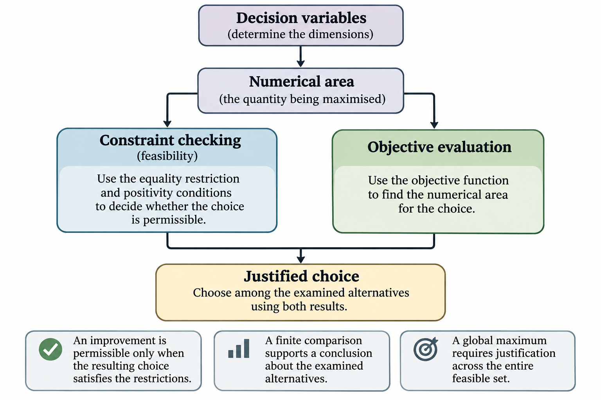
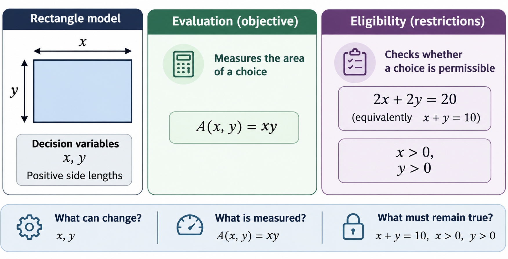
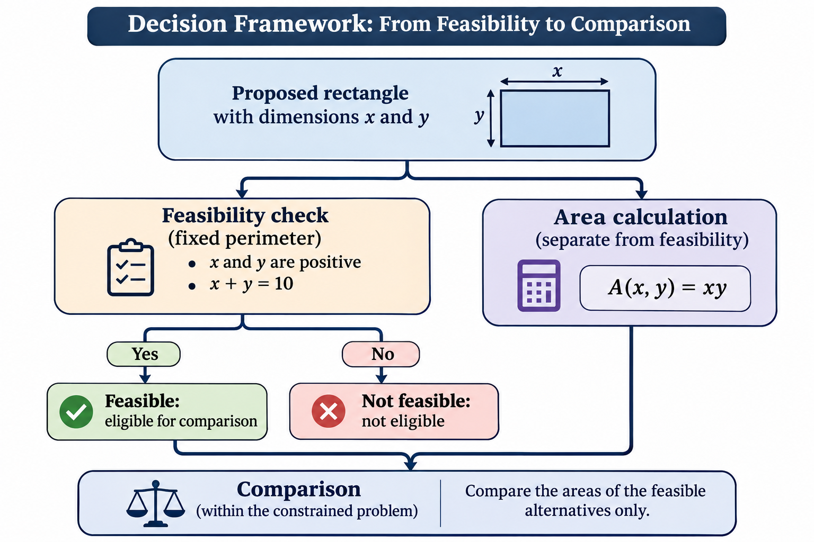
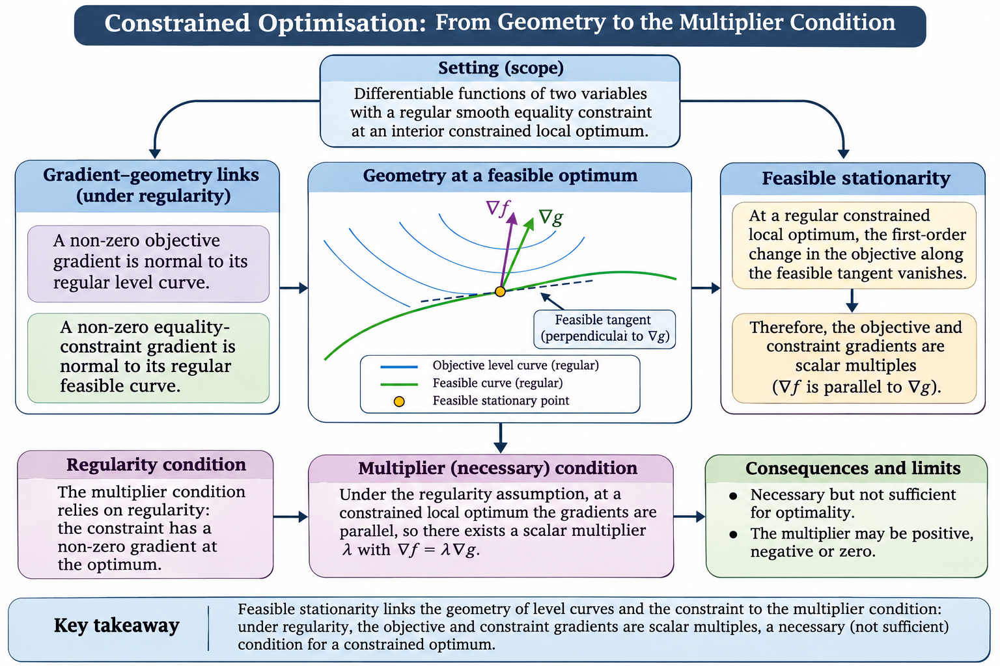
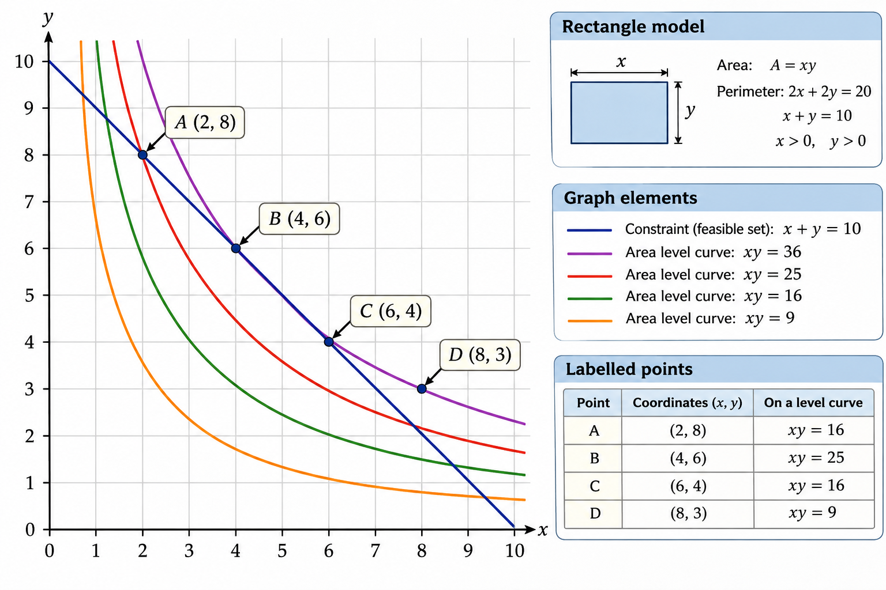
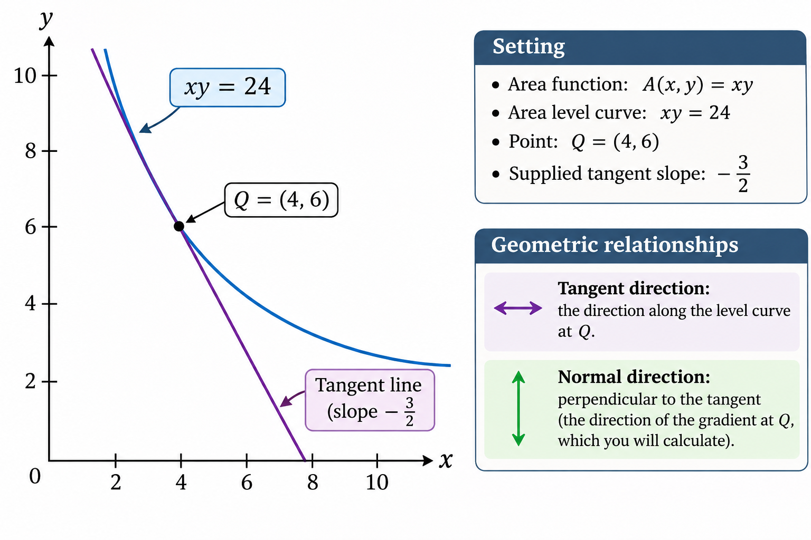
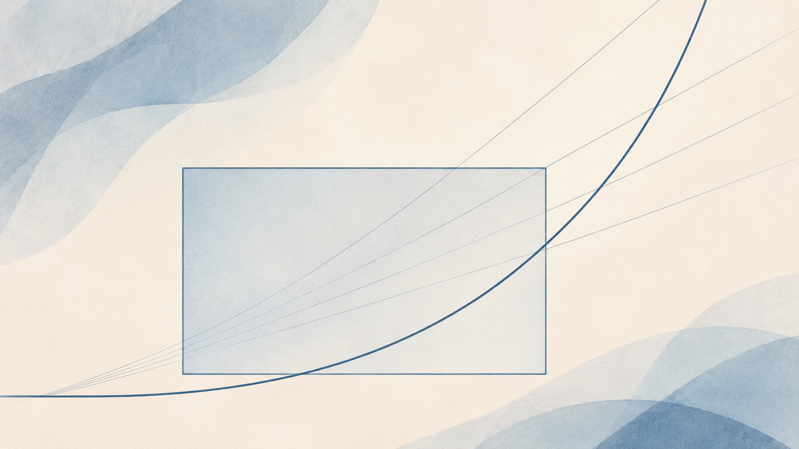
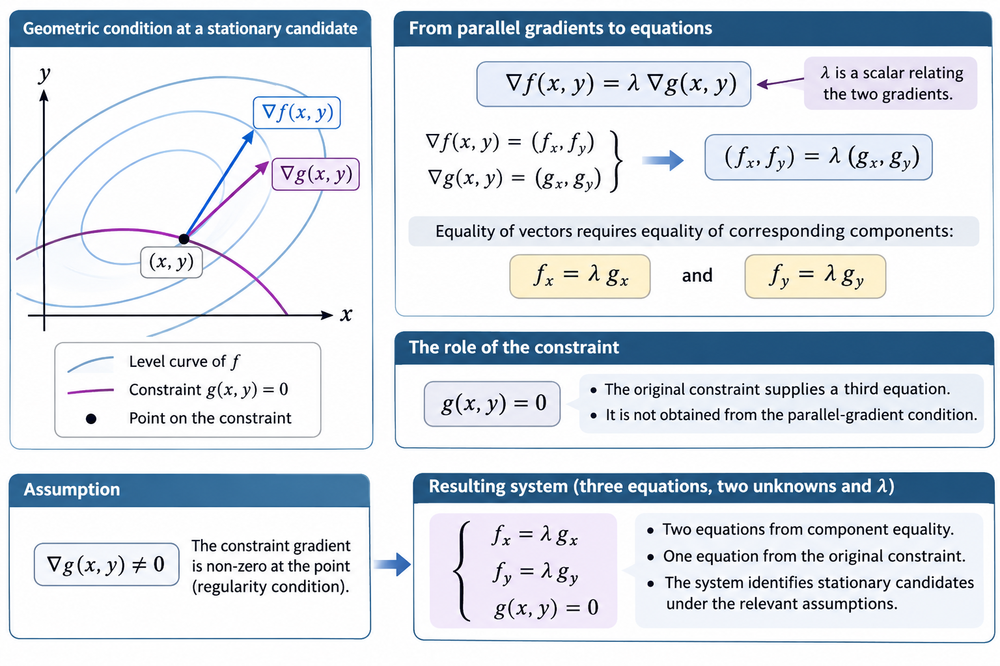

How do you find the best possible outcome when your choices are restricted?
You may already know how to differentiate a function and find stationary points. But a constrained optimisation problem is different: the best permissible solution need not be a stationary point of the unrestricted function.
In this journey, you will discover why Lagrange multipliers work, what their equations mean geometrically and how to use them to solve problems accurately.
You will begin with a familiar problem, investigate gradients and tangency, connect the geometry to the formal equations, and learn to distinguish candidate solutions from justified optima. Finally, you will apply your understanding independently in a new context.
What you will learn to do
Identify an objective function, a constraint and the feasible choices.
Explain how gradients and tangency relate to constrained optima.
Construct and solve Lagrange multiplier equations.
Recognise limitations, common errors and unsupported conclusions.
Apply the method independently and justify your answer.
Study time: Approximately 90 minutes, available to complete over one week. You can spread the experiences across several study sessions. The journey assumes familiarity with partial differentiation and basic functions of two variables, but no previous knowledge of Lagrange multipliers.
Make your predictions before viewing explanations, attempt the mathematical reasoning yourself and use feedback to revisit earlier ideas. The aim is not simply to remember a procedure, but to understand when and why it works.
Draft not saved
Why the constraint matters
Overview
This self-study resource explores how a fixed perimeter affects the choices available when maximising the area of a rectangle. Begin by recording your own prediction, then investigate proposed rectangles and use the evidence to explain what makes an improvement permissible. The three activities build on one another, so retain your initial prediction and complete each comparison before revealing its feedback.
Learning purpose
The activities progress from identifying the mathematical problem, through checking proposed choices, to explaining and transferring the reasoning. Your initial prediction provides a starting point for comparison with evidence. The final activity asks you to use the same principle in a different limited-resource decision.
Knowledge summary
Constrained optimisation concerns finding the best value of an objective while respecting restrictions on the choices available.
Objectives and decision variables
An objective function assigns a numerical value to a proposed choice. It represents the quantity we want to maximise or minimise. Decision variables are the quantities whose values can change.
For a rectangle with side lengths \(x\) and \(y\), the area objective is
\[A(x,y)=xy\]
The two side lengths are decision variables. Changing either dimension can change the area, but it may also affect whether the rectangle satisfies the problem's restrictions.
Constraints and permissible choices
A constraint specifies a condition that choices must satisfy. An equality constraint requires a mathematical expression to equal a fixed value. Other restrictions may require variables to remain positive or non-negative.
For a rectangle with a fixed perimeter of 20 units, the equality constraint is
\[2x+2y=20\]
Equivalently,
\[x+y=10\]
The additional conditions \(x>0\) and \(y>0\) require positive side lengths.
The feasible set contains every choice satisfying all the restrictions. A choice is feasible when it belongs to that set and infeasible when it violates at least one required condition.
Two separate mathematical questions
Evaluating a proposed choice involves distinguishing two questions:
Is the choice permissible? Check every constraint and other restriction.
What objective value does it produce? Substitute the decision-variable values into the objective function.
These checks serve different purposes. A numerical objective value can be calculated for a proposed choice even when that choice is infeasible. A larger objective value therefore does not, by itself, establish a permissible improvement.
A constrained improvement increases the objective while preserving the restrictions. An infeasible improvement may increase the numerical objective but fails at least one condition defining the available choices.
Dependence between variables
Under a fixed total, the decision variables cannot necessarily increase independently. In the rectangle problem, \(x+y=10\) means that increasing one side requires decreasing the other by the same amount.
This dependence changes the available comparisons. Without the fixed-perimeter restriction, positive rectangle dimensions could both increase. With the restriction, any proposed change must preserve the required total.
Comparing alternatives and supporting claims
A useful investigation begins with a prediction, checks candidate choices against the restrictions, calculates their objective values and compares only the feasible alternatives.
The strength of the conclusion must match the evidence. Comparing a finite collection of rectangles can identify the best among those examined. Establishing a global maximum requires an argument covering every feasible choice, not merely the examples inspected.
One possible method for an equality constraint is substitution: express one decision variable in terms of the other, then examine the resulting single-variable objective over the permitted domain. This method can support a general mathematical justification when its reasoning covers the whole feasible set.
The activities will ask you to distinguish feasibility from objective value, test competing claims, and reconsider an initial prediction using mathematical evidence. The particular comparisons and their conclusions are left for you to establish.

Figure 1. How objective values and restrictions jointly determine which choices can be compared.
The decision variables x and y connect to two separate mathematical operations. The area function A(x,y)=xy assigns an objective value, while x+y=10 and the positivity conditions determine whether the proposed dimensions belong to the feasible set. Only choices satisfying the restrictions proceed to comparison as permissible alternatives. A comparison of selected feasible choices identifies the best among those examined; establishing a global maximum requires an argument covering the entire feasible set.
Learning outcomes
By the end of this lesson, you should be able to:
Identify the objective function, decision variables and restrictions in the fixed-perimeter rectangle problem, distinguishing the quantity to be maximised from the conditions that permissible choices must satisfy. (LO1)
Classify proposed rectangle dimensions as feasible or infeasible by applying the perimeter and positivity restrictions, and compare the areas of feasible alternatives. (LO2)
Explain, using the rectangle comparisons and their own initial prediction, why constrained optimisation seeks the greatest objective value among permissible choices rather than the greatest numerical value regardless of restrictions. (LO3)
Predict and define the rectangle
Connect your learning
The central enquiry is what makes a choice the best permissible choice. Familiar ideas about rectangle area and perimeter provide a concrete starting point for distinguishing an objective function from a constraint before introducing any formal optimisation method.
You have 20 units of material to make the perimeter of a rectangle. Its positive side lengths are \(x\) and \(y\), and your aim is to enclose as much area as possible. Before calculating anything, predict whether a long, narrow rectangle, a more balanced rectangle or a square would work best. Keep your prediction: you will return to it after exploring the choices. You will then distinguish what you want to maximise from the restrictions that every permissible rectangle must satisfy.
Begin with your own geometric intuition, then translate the problem into mathematical language. Keep the quantity being maximised separate from the conditions restricting the available choices.
What did you initially expect to happen to the area as the rectangle's shape changed? Which mathematical expression describes your goal, and which expressions limit the choices available to you?
Explore the idea

Figure 2. What can change, what is measured and what must remain true.
The rectangle's positive side lengths x and y are identified as decision variables. One relationship leads to the area objective A(x,y)=xy, which measures the value of a proposed choice. A separate relationship leads to the fixed-perimeter equality 2x+2y=20, or x+y=10, together with x>0 and y>0. These conditions determine whether the choice is permissible. The contrast does not identify a preferred shape or calculate any candidate's area.
Understanding the rectangle problem
What are we trying to achieve?
Imagine using 20 units of material to form the boundary of a rectangle. You can choose its length and width, but you cannot use more or less material. Your aim is to enclose the greatest possible area.
Before reading the mathematical description, record your own prediction in the response workspace. Would a long, narrow rectangle, a more balanced rectangle or a square enclose the most area? Give a reason based on your intuition. You do not need to calculate anything yet.
Two quantities, two different jobs
Call the positive side lengths \(x\) and \(y\). These are the decision variables: changing them changes the rectangle you make.
The area is
\[A(x,y)=xy\]
This is the objective function. It tells us how much area each proposed pair of dimensions encloses. Maximising the objective means seeking the greatest possible value of \(A\).
However, the perimeter must remain 20 units. A rectangle has two sides of each length, so
\[2x+2y=20\]
Dividing by 2 gives the equivalent equality constraint:
\[x+y=10\]
The sides must also be positive:
\[x>0,\qquad y>0\]
Together, these restrictions determine the feasible set: every pair of positive side lengths whose sum is 10. A feasible choice is one that satisfies all the restrictions.
Why the distinction matters
The objective and constraint do different jobs. The objective tells us how good a choice is according to area. The constraint tells us whether that choice is allowed.
Without the fixed perimeter, we could enlarge both positive dimensions and increase the area. With the perimeter fixed, increasing one side means decreasing the other by the same amount. We therefore cannot treat every larger area value as an available improvement.
This is the essential difference between unconstrained and constrained optimisation. Unconstrained optimisation considers choices without the specified restriction; constrained optimisation seeks the best choice within the feasible set.
The key question is not simply, 'Which dimensions give a large area?' It is, 'Which permissible dimensions give the greatest area?'
Your task
Revising against
Record your initial prediction about which rectangle shape will give the greatest area and explain your reasoning without calculating a solution.
Your prediction and problem definition
Identify the decision variables and write the objective function for area.
Express the fixed perimeter as an equality constraint, simplify it, and state the conditions on the side lengths.
Explain in your own words the difference between the quantity you are trying to maximise and the conditions that a permissible rectangle must satisfy.
What to produce
An original, retained prediction with a brief geometric justification; correct identification of the two decision variables and the area objective; an accurate mathematical statement of the perimeter and positivity restrictions; and a clear distinction between maximising area and satisfying the conditions defining permissible rectangles. The initial prediction is treated as reasoning to investigate, not as an answer that must already be correct.
Your draft is saved on this device when possible. It is not submitted.
Before using calculations, which rectangle shape do you expect to enclose the greatest area? Record your own prediction. Keep it unchanged so you can revisit it later.
Explain briefly why you expect that shape to work best. You may use everyday geometric intuition.
Name the two quantities you can choose and write the mathematical expression for the area you want to maximise.
Enter your mathematical expression. Use the maths keyboard for symbols and structures.
If the maths editor is unavailable, enter mathematical notation in this field.
Write the fixed-perimeter equality, its simplified equivalent and the conditions that the side lengths must satisfy.
Enter your mathematical expression. Use the maths keyboard for symbols and structures.
If the maths editor is unavailable, enter mathematical notation in this field.
In your own words, explain what the objective function measures and what the restrictions determine. Why do you need both when selecting a rectangle?
Complete your response first, then use this material to check or improve it.
Review your answer
Criterion 1 of 4
Have you preserved an initial prediction and explained the intuition behind it?
Show guidance for criterion 1
Why this matters
A recorded starting judgement gives you something specific to test against the mathematical evidence later; its initial correctness is not the criterion.
What to look for
A. My response identifies a particular predicted rectangle shape.
B. My prediction has a reason that can be reconsidered.
If something is missing
Missing A: Record whether you initially favoured a long, narrow shape, a more balanced shape or a square. Do not change that first prediction to match later feedback.
Missing B: Add a short statement about how you thought changing the side lengths would affect the enclosed area.
The mathematical description developed earlier now becomes a decision rule. Identifying the objective and constraint is not enough: applying them to actual dimensions reveals why a large numerical area and a permissible solution are different things.
You have identified the area objective and the fixed-perimeter restriction. Now investigate four proposed rectangles. Some may offer a larger area but fail the perimeter requirement. Check each choice before deciding which represents an improvement within the permitted choices. Keep the original prediction available without changing it.
Use two separate checks for each rectangle: first determine whether the dimensions satisfy all restrictions, then calculate the area. Compare objective values only after establishing which choices are permissible.
Which check determines whether a rectangle is allowed? Which calculation tells you how much area it encloses? How do these two pieces of information work together when deciding which choice is better?
Explore the idea

Figure 3. Check permission and area separately before comparing alternatives.
A proposed pair of rectangle dimensions leads to two distinct checks. One checks positivity and whether the dimensions satisfy x+y=10; this determines feasibility. The other calculates the numerical area using A(x,y)=xy. A proposal enters the permissible comparison only if it satisfies every restriction. The area value remains a separate result and cannot make an infeasible proposal eligible. No supplied candidate is calculated or classified.
How feasibility changes a comparison
Two checks for every proposed rectangle
A rectangle can have a perfectly calculable area without being allowed by the problem. That is why area and feasibility need separate calculations.
Consider a proposed rectangle with positive side lengths \(u\) and \(v\). Its total perimeter is \(2u+2v\). Because the available perimeter is fixed at 20 units, the same requirement can be checked using \(u+v=10\). This gives the first intermediate finding: whether the proposed dimensions satisfy the fixed-perimeter equality. Positivity is also checked, because the sides must describe a genuine rectangle.
That feasibility finding determines whether the proposal is eligible for selection. Its area, \(uv\), can then be calculated as a separate numerical result. A large value of \(uv\) tells us how much area the proposed dimensions would enclose; it does not overturn a failed perimeter check.
Now imagine comparing several proposed rectangles. The perimeter and positivity findings identify which belong to the feasible set. Their calculated areas can then be compared to determine which of those permissible alternatives performs best. An alternative outside that set cannot be selected merely because its area is greater.
The resulting judgement has a precise scope: it identifies the best among the alternatives examined. To claim the greatest area across every feasible rectangle, we would need reasoning that covers the entire feasible set rather than just a handful of examples.
Apply this distinction to the four proposed rectangles in your comparison table. The calculations and classifications are yours to establish.
Your task
Revising against
Inspect the four proposed side-length pairs in the supplied rectangle comparison.
Four proposed rectangles
Investigate the alternatives
Simulated teaching example: these dimensions are supplied for mathematical investigation, not drawn from an empirical study.
A rectangle must have a perimeter of exactly 20 units, with both side lengths positive. Its area is the product of its two side lengths.
Four proposed rectangles have the following dimensions:
Rectangle P: \((x,y)=(2,8)\)
Rectangle Q: \((x,y)=(4,6)\)
Rectangle R: \((x,y)=(5,5)\)
Rectangle S: \((x,y)=(6,6)\)
For each rectangle, investigate two separate questions: does it satisfy the restrictions, and what area would it enclose?
Use the comparison workspace to record your calculations. Do not assume that the rectangle with the greatest numerical area is necessarily a permissible choice.
For each pair, calculate the perimeter or side-length sum, check positivity, and classify the rectangle as feasible or infeasible.
Rectangle feasibility and area comparison
Side lengths
Side-length sum or perimeter check
Positivity check
Feasible or infeasible
Area
\((2,8)\)
\((4,6)\)
\((5,5)\)
\((6,6)\)
Calculate its area and record the result separately from feasibility.
Explain why the largest numerical area among all four candidates may not represent an acceptable choice. Review your calculations and classifications using the feedback before continuing.
What to produce
A completed comparison covering all four supplied rectangles, with accurate constraint checks, positivity checks, feasibility classifications and area calculations. The learner identifies the largest area among the feasible alternatives, distinguishes it from any larger infeasible area, and supports the comparison with the relevant numerical evidence. The response does not treat a comparison of four cases as proof of a global maximum over every possible rectangle.
Your draft is saved on this device when possible. It is not submitted.
Calculate its area and record the result separately from feasibility.
Explain why the largest numerical area among all four candidates may not represent an acceptable choice. Review your calculations and classifications using the feedback before continuing.
Does your conclusion use the calculated evidence and stay within the scope of the comparison?
Show guidance for criterion 4
Why this matters
A justified comparison of four candidates is valuable evidence, but it does not by itself establish a global mathematical maximum.
What to look for
A. The preferred supplied feasible alternative is supported by its area and constraint checks.
B. The explanation accounts for any numerically larger but excluded alternative.
C. The conclusion is limited to the supplied alternatives.
If something is missing
Missing A: Cite the relevant completed rows and compare their areas only after identifying which rows are feasible.
Missing B: Name the restriction that prevents that proposal from being selected, rather than dismissing its area calculation.
Missing C: If you claimed a maximum over all possible rectangles, qualify the statement or identify what additional general reasoning would be required.
The perimeter restriction is \(x+y=10\), with both side lengths positive. The area is \(A=xy\).
Side lengths
Side-length sum
Positivity
Feasibility
Area
\((2,8)\)
\(2+8=10\)
Both positive
Feasible
\(2\times8=16\)
\((4,6)\)
\(4+6=10\)
Both positive
Feasible
\(4\times6=24\)
\((5,5)\)
\(5+5=10\)
Both positive
Feasible
\(5\times5=25\)
\((6,6)\)
\(6+6=12\)
Both positive
Infeasible
\(6\times6=36\)
What the calculations establish
The rectangle \((5,5)\) gives the greatest area among the three supplied feasible alternatives, at 25 square units.
The rectangle \((6,6)\) would enclose 36 square units, but its perimeter is \(2(6)+2(6)=24\) units. It exceeds the available perimeter by 4 units. Its greater area is therefore not an available improvement under the stated restriction.
Notice that its area calculation is not wrong. The mistake would be treating a correctly calculated area as evidence that the dimensions are permissible.
Use the feedback to correct your work
If your area differs, recalculate the product of the two side lengths. If your feasibility judgement differs, check the sum of the dimensions against 10 and confirm that both are positive. If you selected the greatest numerical area without checking the perimeter, separate the two decisions in your table.
These four examples demonstrate why the restriction matters. They do not, by themselves, prove that 25 is the greatest area across all positive side-length pairs satisfying the constraint. That broader conclusion requires an argument covering the full feasible set.
Defend the best permissible choice
Connect your learning
The feasibility comparison provides the evidence needed for a more general explanation. The learner now moves from checking individual rectangles to defending a constrained choice, distinguishing the finite comparison from a general proof, and transferring the idea of permissible improvement to a new decision context.
You have compared rectangles by checking both area and feasibility. Now use that evidence to explain why the perimeter restriction changes what counts as the best choice. Return to your original prediction, consider whether the comparison supports it, and explain your reasoning. You will also apply the same principle to a different decision about using a limited resource.
Build an argument from the objective, the restriction and the evidence. Distinguish what the four comparisons establish from what would require a proof over every feasible rectangle. Then use the same distinction between numerical improvement and feasibility in the transfer decision.
What did you predict originally? Which calculations or constraint checks support or challenge that prediction? What can you now say about the best permissible choice, and what would you need to establish a maximum across every feasible rectangle? How does the same reasoning apply when a different resource is limited?
Your task
Revising against
Revisit your original rectangle prediction without replacing it.
A limited-resource allocation
A different kind of decision
Simulated teaching scenario: the resource allocations are illustrative, not measurements from a real organisation.
A project manager has exactly 12 resource units to divide between two uses, labelled \(x\) and \(y\). Neither allocation can be negative.
The fixed-resource condition is
\[x+y=12,\qquad x\geq0,\qquad y\geq0\]
For this decision, the manager's stated objective is to increase the amount assigned to use \(x\) while respecting the fixed total.
The manager is considering these allocations:
Allocation
Units assigned to \(x\)
Units assigned to \(y\)
Current allocation
7
5
Proposed allocation
8
5
The manager asks whether the proposal is an acceptable way to improve the objective.
Use the given values and restrictions to make your own decision. Record your explanation in the resource-allocation response field.
Use the comparison evidence to explain which supplied feasible rectangle offers the greatest area and why a larger-area infeasible rectangle cannot be chosen.
Explain, reconsider and transfer
Explain how the fixed-perimeter constraint changes the problem compared with allowing positive side lengths to increase without that restriction.
Two claims about the rectangle
Card 1
Examine the competing claims
Simulated teaching claims: these statements are created for mathematical analysis and are not quotations from real students or researchers.
The rectangle problem has the following conditions:
\[A(x,y)=xy\]
\[x+y=10,\qquad x>0,\qquad y>0\]
The available perimeter is 20 units. Earlier proposed rectangles included \((2,8)\), \((4,6)\), \((5,5)\) and \((6,6)\).
Candidate claim 1
> 'I would choose side lengths \((6,6)\). They give an area of 36 square units, which is larger than the area of the other proposed rectangles. That makes this the better choice.'
Candidate claim 2
> 'Among the proposed rectangles that satisfy the fixed-perimeter restriction, I would choose \((5,5)\). Its area is 25 square units, and its side lengths satisfy the required equality.'
Treat both statements as claims to investigate, not as supplied conclusions. Use the objective, the restriction and the numerical comparison you completed to decide what each claim establishes and whether its reasoning is justified. Pay attention to the phrase among the proposed rectangles.
Record whether your initial prediction is supported or challenged, identify the evidence responsible, and state your retained or revised interpretation with reasons.
Apply the same reasoning to the supplied resource-allocation claim: identify the objective and restriction, check whether the proposed improvement is permissible, and compose a brief decision explanation for someone allocating the resource.
What to produce
A concise, evidence-supported explanation identifying the objective and restrictions, distinguishing the greatest area among the supplied feasible rectangles from a larger infeasible numerical result, and explaining why removing the perimeter restriction changes the optimisation problem. The response preserves the original prediction, cites specific comparison evidence, and gives a reasoned retained or revised interpretation. A separate short transfer explanation identifies the objective and resource limit in a changed context, checks whether the proposed improvement respects that limit, and communicates a justified permissible-choice judgement without relying on an unproved general optimum.
Your draft is saved on this device when possible. It is not submitted.
Reproduce or consult the prediction you recorded at the start. Keep its original wording or meaning visible rather than replacing it with what you now think.
Use the supplied claims and your rectangle comparison to identify the strongest permissible choice among the proposed rectangles. Refer to the relevant area and constraint calculations. Explain why a numerically larger area may not be selectable.
Explain how the problem would change if positive rectangle side lengths could be increased without a fixed total perimeter. Distinguish an unrestricted increase in area from improvement within the original feasible set.
Identify the particular numerical comparisons or restriction checks that support or challenge your original prediction. Explain how that evidence relates to the reason you initially gave.
State whether you retain or revise your initial prediction and why. Distinguish what the four examples establish from what would be needed to prove a maximum over every feasible rectangle.
Using the separate resource-allocation scenario, write a short explanation for the project manager. Identify the objective and resource restriction, check the relevant totals, and justify whether the proposed change is permissible.
Complete your response first, then use this material to check or improve it.
Record whether your initial prediction is supported or challenged, identify the evidence responsible, and state your retained or revised interpretation with reasons.
Review your answer
Criterion 1 of 4
Have you identified the objective and restriction in the rectangle problem without confusing their roles?
Show guidance for criterion 1
Why this matters
The explanation must distinguish the quantity being improved from the conditions that determine which improvements are available.
What to look for
A. The area objective is identified as the quantity being maximised.
B. The fixed-perimeter equality and positive-side conditions are used as permission rules.
If something is missing
Missing A: Connect the product of the rectangle's two dimensions to the numerical value being compared.
Missing B: State how the side-length restrictions determine whether a proposed rectangle belongs to the feasible set.
Have you applied the same feasibility principle correctly to the separate resource-allocation decision?
Show guidance for criterion 4
Why this matters
The transfer demonstrates whether you can recognise a constrained improvement problem outside the original rectangle setting.
What to look for
A. The resource-allocation objective and fixed-total restriction are identified separately.
B. The proposed allocation is checked against the fixed total using its actual values.
C. The recommendation is justified by the restriction check rather than by the increase alone.
If something is missing
Missing A: Name the allocation the manager wants to increase and distinguish it from the equality limiting the combined allocation.
Missing B: Add the two proposed allocation amounts and compare the result with the available resource total.
Missing C: Connect your decision explicitly to whether the proposal preserves the fixed total, while acknowledging the manager's intended numerical improvement.
Record whether your initial prediction is supported or challenged, identify the evidence responsible, and state your retained or revised interpretation with reasons.
Your draft is saved on this device when possible. It is not submitted.
Reveal verified feedback
Why the restriction changes the answer
Review after completing your explanations
Why a larger area is not always a better choice
The objective function assigns an area to any pair of positive side lengths. For example, \((6,6)\) has area
\[A(6,6)=6\times6=36\]
But the perimeter constraint defines which pairs can actually be chosen. The side lengths must satisfy \(x+y=10\). For \((6,6)\), the sum is 12, corresponding to a perimeter of 24 units rather than 20. Changing the dimensions has increased the numerical area while moving the proposal outside the feasible set.
The area calculation remains correct. What fails is the permission to use that rectangle. A larger objective value is not automatically an improvement within the constrained problem.
The alternative \((5,5)\) satisfies the required sum and has area
\[A(5,5)=5\times5=25\]
Among the supplied feasible rectangles, this is the largest area. The other supplied feasible areas are 16 and 24 square units. This supports candidate claim 2 within its stated scope; candidate claim 1 overlooks the perimeter restriction.
From comparing examples to proving a maximum
Checking four rectangles is useful, but there are infinitely many positive pairs satisfying \(x+y=10\). A comparison of only four cases cannot establish the global maximum on its own.
We can now extend the reasoning algebraically. The constraint requires
\[y=10-x\]
Substituting this into the area objective gives
\[A(x,10-x)=x(10-x)\]
Completing the square,
\[A(x,10-x)=25-(x-5)^2\]
Because both sides are positive, the feasible values satisfy \(0<x<10\). For every such value, the squared term is non-negative, so the area cannot exceed 25 square units. Equality occurs when \(x=5\), which also gives \(y=5\).
This argument covers every feasible rectangle under the stated conditions. It therefore establishes the global maximum of 25 square units at \((5,5)\), rather than merely identifying the best of four examples.
What happens without the restriction?
If the perimeter were not fixed, both positive dimensions could increase. For instance, enlarging each side of any rectangle by the same factor greater than one would increase its area by the square of that factor. There would be no finite greatest area when positive dimensions are otherwise unrestricted.
The fixed perimeter changes the mathematical question. Instead of allowing indefinite enlargement, it creates a feasible set within which the area can be compared and maximised.
Feedback on the resource decision
The same distinction appears in the resource-allocation scenario. The current allocation \((7,5)\) uses
\[7+5=12\]
resource units, satisfying the fixed total. The proposed allocation \((8,5)\) uses
\[8+5=13\]
resource units. Although the proposed change increases the allocation to \(x\), it violates the requirement \(x+y=12\). It is therefore not a permissible improvement under the stated conditions.
A valid alternative would have to preserve the fixed total and non-negativity conditions. This is the same principle as the rectangle problem: the objective describes what we want to improve, while the constraint determines which changes are available.
Debrief
Return to the prediction you recorded at the beginning. If you expected the square to work best, you can now support that view with both numerical comparisons and a general algebraic argument. If you predicted a different shape, identify the evidence that changed your reasoning. The important achievement is being able to explain why the restriction matters, not simply remembering the final dimensions.
Page learner-resource closure
Separate the roles: the objective function measures what is being improved; the constraint and other conditions define which choices are permissible.
Check before comparing: calculate feasibility and objective value separately. A larger numerical value does not justify selecting an infeasible alternative.
Match the claim to the evidence: a comparison of a few candidates identifies the best among those candidates; a global maximum requires reasoning that covers the entire feasible set.
Carry the principle forward: when examining a new constrained decision, identify the resource limit, test the proposed change against it and explain whether the improvement remains permissible.
Transfer your learning
Advise the resource manager
A resource manager wants to increase one allocation without changing the total resources available.
Using the limited-resource allocation scenario, write a brief recommendation to the manager. Identify what the manager is trying to improve, state the restriction that must still hold, and use the supplied allocation figures to check the proposed change.
Explain whether the proposal is a permissible improvement, not merely whether one numerical allocation has increased.
Record your answer under Resource-allocation decision in the response workspace. Aim for three or four sentences supported by the relevant calculation.
Your draft is saved on this device when possible. It is not submitted.
Draft not saved
Seeing gradients and tangency
Overview
This self-study resource explores the geometry of constrained optimisation through a rectangle with fixed perimeter. Work through four activities in order, beginning with feasible area curves and progressing towards an explanation of why gradients become parallel at a regular constrained optimum. Make your predictions and complete each explanation before revealing its feedback. You can revisit earlier calculations as you develop your reasoning.
Learning purpose
The activities move from interpreting a feasible set to examining objective gradients, testing movement along a constraint, and explaining the geometric relationship behind the Lagrange multiplier condition. The final activity asks you to construct an explanation independently and apply the idea of parallel vectors to a separate claim.
Knowledge summary
Constrained optimisation asks how large or small an objective function can become when the variables must satisfy specified conditions. In two variables, an objective \(f(x,y)\) assigns a value to each coordinate pair, while an equality constraint \(g(x,y)=c\) identifies the permitted set. A point can have an attractive objective value without being feasible. The optimisation problem concerns values achieved within the feasible set, not throughout the entire coordinate plane.
Level curves and gradients
A level curve \(f(x,y)=k\) contains points sharing the same objective value \(k\). A family of level curves helps us distinguish changes in the objective from movement that preserves its value. The gradient
\[\nabla f=(f_x,f_y)\]
combines the two partial derivatives. Where it is non-zero, it points in the direction of greatest local increase per unit distance. Its magnitude gives the corresponding maximum rate of increase.
A tangent direction follows a smooth level curve locally. If \(\mathbf{r}(s)\) traces that curve, the objective remains constant along the path. Differentiating gives
\[\nabla f\cdot\mathbf{r}'(s)=0.\]
Thus the gradient is perpendicular to the tangent at a regular level-curve point. The tangent describes movement that preserves the objective to first order; the gradient describes local increase without imposing the separate optimisation constraint.
Feasible movement
For a differentiable equality constraint \(g(x,y)=c\), the constraint gradient \(\nabla g\) is normal to the feasible curve wherever \(\nabla g\ne\mathbf{0}\). A tangent direction \(\mathbf{t}\) to that curve satisfies
\[\nabla g\cdot\mathbf{t}=0.\]
The dot product \(\nabla f\cdot\mathbf{t}\) then measures the first-order change in the objective along that feasible direction, using the chosen tangent as a path velocity. A positive value indicates first-order increase in the specified direction; a negative value indicates decrease. A zero value means there is no first-order change in that direction. It does not, by itself, establish a maximum or minimum.
For example, consider the separate functions \(F(u,v)=u+2v\) and \(h(u,v)=u+v=6\). A tangent to the constraint has direction \((1,-1)\), since \((1,1)\cdot(1,-1)=0\). The objective gradient is \((1,2)\), so its dot product with this tangent is \(-1\). This calculation illustrates how to test a feasible direction; it is not a solution to the rectangle activities.
Why the multiplier relationship arises
At an interior constrained local optimum on a regular equality-constraint curve, the objective has zero first-order change along the feasible tangent. Both \(\nabla f\) and \(\nabla g\) are therefore perpendicular to the same tangent direction. In two dimensions, this means they lie along the same normal line, giving the necessary first-order condition
\[\nabla f=\lambda\nabla g,\qquad g(x,y)=c.\]
The scalar \(\lambda\) is the Lagrange multiplier. Parallel gradients need not point in the same direction: the multiplier may be positive or negative. It may also be zero if the objective gradient vanishes. In that case, the objective level curve need not possess the regular tangent assumed in the familiar picture of two smooth curves touching.
The regularity requirement \(\nabla g\ne\mathbf{0}\) matters because it supplies a well-defined normal to the constraint. The multiplier equations identify stationary candidates under the stated assumptions; they do not prove that a candidate is a maximum or minimum. Establishing optimality requires additional reasoning about the objective along the feasible set.
Finally, the numerical value of the multiplier depends on how the constraint is expressed. Multiplying a constraint equation by a non-zero constant preserves its feasible set but rescales its gradient, and therefore changes the corresponding multiplier. The geometric relationship remains the same.

Figure 1. Conceptual links between level curves, feasible tangents, gradients and the necessary multiplier condition.
Two branches distinguish the objective from the constraint. For the objective, a non-zero gradient is perpendicular to the tangent of a regular constant-value curve. For the equality constraint, a non-zero constraint gradient is perpendicular to the feasible tangent. A connecting relationship shows that at a regular constrained local optimum, first-order objective change along the feasible tangent is zero. Both gradients therefore lie on the same normal line and are scalar multiples. The final relationship is labelled necessary, not sufficient; the multiplier may have either sign or be zero.
Learning outcomes
By the end of this lesson, you should be able to:
Interpret labelled level curves of A(x,y)=xy and the constraint x+y=10 to distinguish feasible from infeasible points and explain how the constraint restricts possible improvements in area. (LO1)
Calculate and interpret the gradient grad A=(y,x) at a specified feasible point, predict the direction of greatest local increase in area, and distinguish that direction from the tangent to a regular area level curve. (LO2)
Identify a feasible tangent direction for x+y=10 and use gradient directions or directional derivatives to explain why feasible first-order improvement is possible at (4,6) but absent at (5,5). (LO3)
Explain why the objective and constraint gradients are parallel at a regular constrained optimum, express this relationship as grad f=lambda grad g with grad g non-zero, and distinguish the resulting first-order condition from proof of optimality. (LO4)
Explore feasible area curves
Connect your learning
The central question is why the largest unrestricted area is not necessarily the largest feasible area. Begin with the rectangle and its constraint, using level curves to connect numerical choices with geometric possibilities.
If you completed 'Why the constraint matters', revisit your initial prediction about the rectangle with perimeter 20 units and your explanation of feasible choices. Use that reasoning to distinguish points you can reach while preserving the perimeter from points that would require changing it. Now investigate how constant-area curves help you see this distinction.
Interpret the constraint before comparing areas. Predict which labelled area curves can contain feasible points, then inspect the supplied coordinates and equations to support or revise your interpretation.
Explain how the constraint changes which area curves matter. If your initial prediction differed from your interpretation of the supplied curves, identify the mathematical evidence that led you to reconsider it.
Explore the idea
Review the mathematical feedback, then explain why an area curve containing an infeasible point does not establish a solution to the constrained problem.

Figure 2. Compare the fixed-perimeter line with labelled area curves before checking the coordinates.
The horizontal axis represents x and the vertical axis represents y, both positive. A descending straight line is labelled x+y=10. Four decreasing curves are labelled xy=16, xy=24, xy=25 and xy=36. P is at (2,8), Q at (4,6), R at (5,5) and S at (6,6). The straight constraint line is distinguishable from the curved area levels through direct labels and line conventions. No point is marked as feasible, infeasible or optimal; learners must establish those conclusions using the equations.
How area curves and constraints fit together
A level curve collects all coordinate pairs that give the same value of a function. For the rectangle, \(A(x,y)=k\) means that every point on that curve has area \(k\). Different curves represent different area values, but the curves themselves do not tell us which rectangles satisfy the fixed-perimeter requirement.
The constraint \(x+y=10\), together with \(x>0\) and \(y>0\), selects the permitted part of the coordinate plane. A particular area level is attainable only if its level curve intersects this feasible set. The geometric problem therefore involves two overlapping structures: a family of constant-area curves and a line of permitted rectangles.
Imagine moving from one coordinate pair to another. If \(x\) increases by a small amount while \(y\) decreases by exactly the same amount, their sum stays fixed. This movement follows the feasible line, although the area may change. By contrast, increasing both side lengths can increase area while also increasing their sum. That unrestricted movement may leave the feasible line.
The distinction is not between high and low areas alone. It is between areas that occur somewhere in the coordinate plane and areas that can occur while the perimeter remains fixed. The labelled curves and coordinate pairs in the scenario let you investigate that distinction without relying on colour or the precision of a diagram.
Your task
Revising against
Reconsider your earlier rectangle prediction and use the supplied labelled curves and coordinate pairs to predict which points are feasible and which area levels are attainable.
Simulated rectangle: Feasible points and area curves
Simulated mathematical scenario
A rectangle has positive side lengths \(x\) and \(y\), measured in units. Its perimeter is fixed at 20 units.
The area is
\[A(x,y)=xy.\]
The perimeter condition is
\[2x+2y=20,\]
or equivalently
\[x+y=10,\qquad x>0,\quad y>0.\]
On a coordinate plane, the horizontal axis represents \(x\), increasing to the right, and the vertical axis represents \(y\), increasing upwards.
The feasible line is labelled \(C: x+y=10\). In the positive quadrant, it runs between the excluded boundary endpoints \((0,10)\) and \((10,0)\).
Four constant-area curves are labelled:
\(L_{16}:xy=16\)
\(L_{24}:xy=24\)
\(L_{25}:xy=25\)
\(L_{36}:xy=36\)
Each is a decreasing curve in the positive quadrant. Its label identifies the area shared by every point on that curve.
Label
Coordinate pair
Area
P
\((2,8)\)
\(16\)
Q
\((4,6)\)
\(24\)
R
\((5,5)\)
\(25\)
S
\((6,6)\)
\(36\)
Accessible coordinate description: P lies left of and above Q; R lies to the right of and below Q; S lies above and to the right of R. Use the equations and coordinates rather than colour or visual proximity to decide whether a point lies on the feasible line.
For each point, inspect both \(xy\) and \(x+y\). The area value identifies a level curve; the perimeter equation determines whether the point is permitted. Record your classifications in the comparison table before viewing the feedback.
Complete the comparison workspace, recording whether each point satisfies the perimeter constraint and explaining what its area level represents.
Feasibility and attainability comparison
Point
Given area
Does this point satisfy the constraint?
Substitution or calculation
What does this establish about the area level?
\((2,8)\)
\(16\)
\((4,6)\)
\(24\)
\((5,5)\)
\(25\)
\((6,6)\)
\(36\)
Distinguish movement along the constraint from unrestricted movement that changes the perimeter.
Explain the constraint's effect
What to produce
A completed comparison identifying feasibility from the constraint equation, interpreting the labelled area levels using the supplied coordinates, and explaining how the feasible line restricts attainable objective values. The explanation distinguishes geometric attainability from unrestricted area increase and connects the learner's earlier prediction to the inspected mathematical particulars.
Your draft is saved on this device when possible. It is not submitted.
What changes when a rectangle moves along \(x+y=10\), and what remains fixed?
How could an unrestricted movement increase area while failing to preserve the perimeter?
Use at least one coordinate pair and area from the scenario to support your explanation.
If you previously studied Why the constraint matters, state whether the labelled curves support or change your earlier prediction. If you did not complete that resource, state your initial prediction now and compare it with your calculations.
Have you distinguished a point on an area curve from an attainable area level?
Show guidance for criterion 2
Why this matters
A level curve can contain infeasible points, so classifying one point does not always classify the entire level.
What to look for
A. The response connects each given area to its constant-area curve.
B. Claims of attainability are supported by a feasible point, while broader unattainability claims have separate justification.
If something is missing
Missing A: Name the level equation xy=k associated with the coordinate pair before discussing attainability.
Missing B: If you infer that a whole level is impossible from one infeasible point, reconsider whether other points on the same curve could satisfy the constraint.
The first three pairs establish that area levels 16, 24 and 25 are attainable. The pair \((6,6)\) has area 36, but its perimeter is 24 units rather than 20 units. Its larger area does not make it a feasible solution.
An infeasible point on a level curve does not, by itself, prove that the entire level is unattainable. Here we can test the level 36 more carefully. With \(y=10-x\), a feasible rectangle has
\[A=x(10-x)=25-(x-5)^2.\]
Because \((x-5)^2\geq0\), feasible area cannot exceed 25. Consequently, area 36 is unattainable under this constraint. This calculation also establishes that \((5,5)\) gives the unique global maximum among positive feasible side lengths.
This algebraic verification is distinct from the gradient and tangency argument developed later. A diagram can help you recognise where an area curve meets the feasible line, but the gradient argument will explain the local geometry of a regular constrained optimum.
Debrief
Check whether your explanation distinguished a point's feasibility from an area level's attainability. If you initially treated the largest listed area as the best constrained answer, identify which constraint calculation changed that interpretation.
Predict gradients and tangents
Connect your learning
The level-curve comparison established which area values are feasible. The next step is to investigate local change at a point, so that the direction of increasing area can be distinguished from the direction that preserves an area level.
A level curve shows where area stays constant. A gradient describes how area changes locally. Investigate how these two geometric ideas are related, and why the direction of greatest unrestricted increase differs from movement along a constant-area curve.
Begin with a prediction from the supplied local geometry. Calculate the gradient components, compare the resulting vector with the level-curve tangent, and use their dot product or equivalent reasoning to explain the relationship.
Explain why a gradient arrow and a tangent arrow describe different kinds of local movement. State how the calculation supports your interpretation.
Explore the idea
Review the modelled relationship and explain why movement along a regular level curve produces no first-order change in area.

Figure 3. Inspect the tangent at Q, then calculate the objective gradient to determine its normal direction.
On axes with x increasing rightwards and y upwards, the decreasing area curve xy=24 passes through Q=(4,6). A straight tangent line passes through Q and slopes downwards with slope -3/2. The tangent direction is identified as movement along the curve. A separate normal-direction cue indicates the perpendicular relationship to investigate, without supplying a numerical gradient vector or selecting a candidate direction. The fixed-perimeter tangent is not substituted for this area-level tangent.
Why gradients are normal to level curves
A differentiable function can change when either of its coordinates changes. Its partial derivatives describe the local rate of change with respect to each coordinate while the other is held fixed. Combining them gives the gradient:
\[\nabla f=(f_x,f_y).\]
At a point where \(\nabla f\ne\mathbf{0}\), the gradient points in the direction of greatest local increase per unit distance. Its magnitude gives that maximum rate. A direction vector \(\mathbf{t}\) describes another possible movement; the dot product \(\nabla f\cdot\mathbf{t}\) measures the first-order change per unit of the parameter whose path velocity is \(\mathbf{t}\). For a unit direction, it is the directional derivative per unit distance.
Now imagine travelling along a differentiable curve on which the function value stays constant. If the path is \(\mathbf{r}(s)\), then \(f(\mathbf{r}(s))=k\). Differentiating with respect to \(s\) gives
The path velocity \(\mathbf{r}'(s)\) is tangent to the level curve. The zero dot product says that the gradient is perpendicular to this tangent. Where the gradient is non-zero, the level curve is regular locally, so this gives a meaningful normal direction.
The distinction is geometric: a tangent follows a route of constant function value to first order; a non-zero gradient points towards greatest increase. At a point where the gradient vanishes, the usual interpretation of a unique gradient normal to a regular level curve cannot simply be assumed.
Use this general reasoning to interpret the specific point and tangent in the scenario.
Your task
Revising against
Inspect the supplied feasible point and local area-curve representation, then predict the direction of greatest unrestricted local increase.
Simulated local geometry at a rectangle
Simulated mathematical scenario
Consider the area function
\[A(x,y)=xy\]
at the point \(Q=(4,6)\). This point satisfies the fixed-perimeter constraint \(x+y=10\), but the curve you are investigating here is the area level curve
\[xy=24.\]
The horizontal axis is \(x\), increasing to the right; the vertical axis is \(y\), increasing upwards. The area curve passes through Q and slopes downwards as it moves to the right.
A local tangent line touches the area curve at Q. To inspect its direction without relying on a drawing, use the following line description:
\[y-6=-\frac{3}{2}(x-4).\]
This describes the line's slope and position, but does not identify the gradient or interpret its relationship with the tangent.
For your initial prediction, consider three candidate directions from Q:
Direction I: right and upwards, with displacement \((1,1)\).
Direction II: right and downwards, with displacement \((2,-3)\).
Direction III: left and upwards, with displacement \((-1,2)\).
Predict which general direction best matches the greatest unrestricted local increase in area. Then calculate the gradient to determine the precise direction. You may use the tangent-line equation and coordinates instead of drawing arrows.
Calculate the partial derivatives of the area function and evaluate its gradient at the specified point.
Gradient and tangent reasoning workspace
Identify a tangent direction to the area level curve and compare it with the gradient using a geometric or dot-product explanation.
What to produce
A prediction of local increase, a correctly derived and evaluated gradient, and a reasoned comparison between the gradient and a tangent to the regular area level curve. The explanation uses the supplied point and mathematical relationships to distinguish greatest local increase from first-order constant-area movement.
Your draft is saved on this device when possible. It is not submitted.
Record your response for Predicted direction.
Record your response for Partial derivatives.
Enter your mathematical expression. Use the maths keyboard for symbols and structures.
If the maths editor is unavailable, enter mathematical notation in this field.
Record your response for Gradient at the point.
Enter your mathematical expression. Use the maths keyboard for symbols and structures.
If the maths editor is unavailable, enter mathematical notation in this field.
Record your response for Level-curve tangent.
Enter your mathematical expression. Use the maths keyboard for symbols and structures.
If the maths editor is unavailable, enter mathematical notation in this field.
The gradient points right and upwards. Its exact direction is not the same as the candidate displacement \((1,1)\), although that candidate has the same general orientation.
The supplied tangent line has slope \(-3/2\), so one tangent vector is \(\mathbf{t}=(2,-3)\). Their dot product is
\[(6,4)\cdot(2,-3)=12-12=0.\]
Thus the gradient is perpendicular to the tangent of the regular area level curve \(xy=24\). The tangent represents local movement preserving area to first order, whereas the gradient indicates greatest unrestricted local increase.
Do not confuse two different tangents. The area-level tangent at Q has direction \((2,-3)\). The fixed-perimeter line \(x+y=10\) has tangent direction \((1,-1)\). The two lines describe different restrictions on movement and need not have the same tangent direction.
Debrief
If your prediction relied only on the shape of the curve, compare it with the calculated vector. A useful explanation identifies both the geometric relationship and the derivative calculation that supports it.
Test feasible directions
Connect your learning
The gradient-level-curve relationship established how to distinguish normal and tangent directions. Apply that distinction to the constraint itself, then compare objective change along its feasible tangent at two different rectangles.
A direction can increase area without preserving the perimeter. Compare local feasible movement at two points on the fixed-perimeter line and determine what the gradient reveals about possible first-order improvement.
Use the constraint gradient to establish a feasible tangent direction. Predict the sign of local area change at each supplied point before calculating directional derivatives. Interpret the results in terms of first-order feasible improvement rather than assuming that stationarity proves an optimum.
Explain why the constraint gradient determines permissible tangent movement and how the objective gradient determines the first-order area change along that movement. If your prediction differed from your calculation, identify the evidence and explain your revised interpretation.
Explore the idea
Tracing first-order change along a feasible path
Consider a separate illustrative investigation: maximise or increase the differentiable quantity \(F(u,v)=u^2+v\) while remaining on the regular line \(h(u,v)=u+v=6\). We inspect the feasible point \((2,4)\) to see how a local direction can be tested.
Differentiating the constraint gives \(\nabla h=(1,1)\), a non-zero normal vector. A movement with direction \(\mathbf{t}=(1,-1)\) is tangent to the line because
\[\nabla h\cdot\mathbf{t}=(1,1)\cdot(1,-1)=0.\]
This means a small increase in \(u\), balanced by the same decrease in \(v\), preserves the equality. The objective gradient is \(\nabla F=(2u,1)\), which at \((2,4)\) becomes \((4,1)\). Combining this local gradient with the already established feasible tangent gives
The positive result means the objective increases to first order for a small positive movement in this parameter direction. Reversing the direction reverses the sign. A negative result would indicate first-order decrease in the chosen direction. A zero result would indicate no first-order change along that tangent, but it would not by itself prove a local maximum: second-order behaviour or other arguments would still matter.
The calculation has a connected logic. The constraint determines the tangent; the objective gradient determines the local rate of change; their dot product determines the first-order effect of that feasible movement. Apply this same reasoning to the two different points in your rectangle scenario.
Your task
Revising against
Inspect the two supplied feasible points and predict whether movement increasing x while decreasing y by the same amount will locally increase, decrease or leave area unchanged to first order.
Simulated comparison: Moving along the perimeter line
Simulated mathematical scenario
A rectangle has positive side lengths \(x\) and \(y\), area
\[A(x,y)=xy,\]
and fixed-perimeter constraint
\[g(x,y)=x+y=10,\qquad x>0,\quad y>0.\]
Compare two labelled points on the feasible line:
Point Q: \((4,6)\).
Point R: \((5,5)\).
At either point, consider a small movement that increases \(x\) by an amount \(h\) and decreases \(y\) by the same amount \(h\). Its displacement is \((h,-h)\), where \(h\) is small enough that both side lengths remain positive. The associated path velocity, using \(h\) as parameter, is \((1,-1)\).
Accessible geometric description: On axes with \(x\) increasing rightwards and \(y\) upwards, the feasible line slopes downwards. The proposed movement travels right and down along that line. Point Q is left of and above point R.
Before calculating, predict the first-order effect on area of this movement at Q and at R. Then compare the objective gradient with the direction of permitted movement. Do not assume that the effect must be identical at both points merely because the same constraint applies.
Calculate the constraint gradient and identify a feasible tangent direction.
Compare first-order feasible changes
Point
Initial predicted area change
Objective gradient
Feasible tangent
Gradient–tangent dot product
First-order interpretation
Revised prediction, if needed
\((4,6)\)
\((5,5)\)
Evaluate the objective gradient and its dot product with that tangent at each point.
Explain feasible improvement and stationarity
Write approximately 100–150 words comparing the two points.
Explain how the constraint gradient identifies the normal to the feasible line and how your chosen tangent preserves the perimeter. Then explain how the objective gradient and directional dot product determine whether the specified movement increases area to first order at each point.
Your explanation must distinguish a point with an available first-order improving direction from a point with zero first-order change along the feasible tangent. Finish by explaining why a zero result alone does not prove a maximum.
Your comparative explanation:
Calculation that most strongly supports your interpretation:
What remains unproved by a zero directional derivative:
Review feedback and refine your explanation where necessary.
What to produce
A structured comparison containing an identified feasible tangent, the relevant gradient and dot-product calculations at both supplied points, and a justified interpretation of the resulting first-order changes. The explanation distinguishes an available feasible improving direction from first-order feasible stationarity and avoids treating stationarity alone as proof of optimality.
Review feedback and refine your explanation where necessary.
Your draft is saved on this device when possible. It is not submitted.
The positive value means that moving a small amount in the specified direction increases area to first order. The current point therefore cannot be a constrained local maximum in the interior of this feasible line.
Here the first-order change along the feasible tangent is zero. The reverse tangent also gives zero, so there is no first-order feasible increase in either tangent direction. This is first-order stationarity, not a stand-alone proof of a maximum.
For the particular rectangle problem, the separate identity \(A(x,10-x)=25-(x-5)^2\) proves the global maximum at \((5,5)\). That proof relies on the form of the area function along the entire feasible line, not merely on a zero directional derivative.
Debrief
Revisit any prediction that treated a zero first-order change as automatically sufficient for optimality. Your calculation identifies local stationarity; the global claim requires additional reasoning.
Explain parallel gradients
Connect your learning
The feasible-direction comparison established how zero first-order change relates to the constraint tangent. Use that result to explain why the objective and constraint normals are parallel, then transfer the principle from interpreting a diagram to judging a mathematical statement.
Bring the geometry together. Use the rectangle to explain why objective and constraint gradients become parallel at a regular constrained optimum, then apply the same reasoning to a different mathematical claim without assuming that the first-order condition proves optimality.
Build the explanation from feasible tangent movement to perpendicular gradients and scalar proportionality. Distinguish geometric stationarity from a proof of optimality. Apply the resulting reasoning to a short, differently framed claim about gradient direction.
Explain the chain from feasible movement to the multiplier equation in your own words. Then explain what additional reasoning would be needed before describing a stationary candidate as a proven maximum.
Explore the idea
Review the post-attempt mathematical feedback and check the scope and precision of both explanations.
From feasible tangency to the multiplier condition
Suppose a differentiable objective \(f(x,y)\) is optimised locally subject to a differentiable equality constraint \(g(x,y)=c\), at a point where \(\nabla g\ne\mathbf{0}\). The non-zero constraint gradient is normal to the regular feasible curve. Any tangent direction \(\mathbf{t}\) therefore satisfies
\[\nabla g\cdot\mathbf{t}=0.\]
At an interior constrained local maximum or minimum, movement along the feasible curve cannot produce a non-zero first-order change in the objective: if it did, one of the two tangent directions would locally improve the value in a way inconsistent with that extremum. Consequently,
\[\nabla f\cdot\mathbf{t}=0.\]
The objective gradient and constraint gradient are thus both perpendicular to the same non-zero tangent direction. In two dimensions, all vectors perpendicular to a given non-zero tangent lie on the same normal line. They are scalar multiples, giving
\[\nabla f=\lambda\nabla g.\]
The scalar \(\lambda\) is the Lagrange multiplier. Its sign and magnitude depend on the objective and the chosen representation of the constraint. A positive multiplier corresponds to gradients in the same direction; a negative multiplier corresponds to opposite directions; and a zero multiplier is possible when the objective gradient is zero. In that last case, the objective need not have a regular level-curve tangent even though the constraint remains regular.
The relationship must be considered together with the constraint equation \(g(x,y)=c\). These are necessary first-order conditions for a regular constrained local optimum, not sufficient conditions. A solution of the equations is a stationary candidate whose actual optimality must be established by further reasoning.
This geometric interpretation prepares the transition to From geometry to the multiplier equations, where the same relationships become a systematic method for finding candidates.
Your task
Revising against
Use the established rectangle geometry to explain why zero first-order change along the feasible tangent leads to parallel objective and constraint gradients when the constraint is regular.
Independent explanation and multiplier workspace
Express the relationship using \(\nabla f=\lambda\nabla g\) and the constraint equation, identify the multiplier for the canonical rectangle representation, and explain why the equations alone do not prove an optimum.
Your explanation of the candidate claim
Address your response directly to the learner who wrote the claim in the separate task card.
Interpretation of Pair I:
Interpretation of Pair II:
Explanation of the claim and the sign of proportionality:
Aim for a concise explanation that another learner could use to interpret gradient arrows in a diagram. Support the explanation with both numerical pairs. Do not introduce a claim about an optimum.
Inspect a separate mathematical claim about the direction of parallel gradients and produce a short explanation for a learner who is interpreting that claim.
Simulated rectangle: Establishing the gradient relationship
Card 1
Simulated mathematical task
Return to the rectangle with positive side lengths and fixed perimeter 20 units.
Use these particulars to explain why first-order stationarity along the feasible line leads to a scalar relationship between the objective and constraint gradients. Evaluate the gradients at the supplied point and determine the scalar \(\lambda\) in
\[\nabla A=\lambda\nabla g.\]
The constraint could also be written as \(2x+2y=20\). That equation represents the same feasible line, but its gradient is defined by a differently scaled expression. Keep this distinction in mind when interpreting the multiplier.
Do not treat the multiplier equation alone as proof of a maximum. Record the reasoning and calculation in the structured workspace before viewing the feedback.
Simulated candidate claim: Do parallel arrows agree?
Card 1
Simulated mathematical claim for interpretation
A learner proposes the following statement:
> If two non-zero gradients are parallel, their arrows must point in the same direction.
The components describe horizontal and vertical directions, respectively: positive components point right or up; negative components point left or down.
For each pair, determine whether one vector is a scalar multiple of the other and consider the direction of the corresponding arrows. The quoted sentence is a candidate claim to evaluate, not a mathematical rule supplied as correct.
What to produce
A coherent explanation linking the feasible tangent, zero first-order objective change, parallel normal vectors and the multiplier relationship under the non-zero constraint-gradient condition. The learner identifies the canonical multiplier through the established rectangle gradients, distinguishes necessary first-order stationarity from sufficient proof, and produces a separate justified interpretation of a changed claim about gradient direction. The transfer explanation must use the sign of scalar proportionality and avoid claiming that parallel vectors must point in the same direction.
Your draft is saved on this device when possible. It is not submitted.
Record your response for Feasible tangent reasoning.
Record your response for Gradient relationship.
Enter your mathematical expression. Use the maths keyboard for symbols and structures.
If the maths editor is unavailable, enter mathematical notation in this field.
Record your response for Multiplier calculation.
Enter your mathematical expression. Use the maths keyboard for symbols and structures.
If the maths editor is unavailable, enter mathematical notation in this field.
Record your response for Regularity condition.
Record your response for What the condition establishes.
Feedback: Parallel gradients, multiplier and proof
Reveal after completing both explanations
At the feasible point \((5,5)\), the objective gradient is
\[\nabla A(5,5)=(5,5).\]
The constraint gradient is \(\nabla g=(1,1)\). Consequently,
\[\nabla A(5,5)=(5,5)=5(1,1)=5\nabla g.\]
The multiplier for the representation \(g(x,y)=x+y=10\) is therefore \(\lambda=5\).
Both gradients are perpendicular to the feasible tangent \((1,-1)\):
\[(5,5)\cdot(1,-1)=0,\qquad (1,1)\cdot(1,-1)=0.\]
This illustrates the geometric mechanism. At a regular constrained local optimum, first-order objective change vanishes along the feasible tangent, so the objective gradient lies in the normal direction already determined by the non-zero constraint gradient. The multiplier records their scalar proportionality.
The multiplier depends on how the constraint is expressed. Writing the same feasible set as \(2x+2y=20\) gives the constraint gradient \((2,2)\). Then
\[(5,5)=\frac{5}{2}(2,2),\]
so the multiplier becomes \(5/2\), while the feasible line and its tangent geometry remain unchanged.
Feedback on the candidate claim
For Pair I,
\[(2,2)=2(1,1).\]
The scalar is positive, so the arrows point in the same direction. For Pair II,
\[(-2,-2)=-2(1,1).\]
The scalar is negative, so the arrows point in opposite directions. Both pairs are parallel because the vectors are scalar multiples. A suitable explanation therefore distinguishes parallel from same-direction rather than treating the terms as interchangeable.
What proves the rectangle's maximum?
The multiplier equation is a necessary first-order condition in the regular setting. It identifies a stationary candidate; it does not independently prove that the candidate is a maximum.
For this particular rectangle, substitute the constraint into the area:
\[A(x,10-x)=x(10-x)=25-(x-5)^2.\]
For positive feasible side lengths, \(0<x<10\), and \((x-5)^2\geq0\). Thus
\[A(x,10-x)\leq25,\]
with equality only at \(x=5\), giving \(y=5\). This separate global argument proves the unique constrained maximum area of 25.
Debrief
A complete geometric explanation links the feasible tangent to the constraint normal, links first-order stationarity to the objective normal, and explains why the two normals are scalar multiples. It also states clearly that first-order stationarity and a proof of optimality are different achievements.
Transfer your learning
Explain a gradient-direction claim to another learner
A learner has written the candidate statement shown in the separate claim card. Your task is to respond as a mathematical explainer rather than to solve another rectangle optimisation problem.
Write a short message of approximately 70–100 words that:
Interprets the candidate claim using both supplied vector pairs.
Explains how the sign of the scalar in \(\mathbf{u}=\lambda\mathbf{v}\) affects arrow direction.
Distinguishes what it means for vectors to be parallel from what it means for them to point in the same direction.
Use the numerical pairs as evidence for your explanation. Do not infer anything about maxima or minima from these vector pairs alone. Write your message independently before viewing the feedback.
Your draft is saved on this device when possible. It is not submitted.
From geometry to the multiplier equations

The rectangle problem: what must the equations preserve?
Consider a rectangle with positive side lengths x and y and a fixed perimeter of 20 units. We want to find the dimensions that maximise its area.
The area is A(x,y)=xy. The perimeter restriction is 2x+2y=20, which we can simplify to x+y=10. We also require x>0 and y>0 because both side lengths must be positive.
These statements describe two different parts of the problem. The objective A(x,y)=xy tells us what we want to make as large as possible. The constraint x+y=10 tells us which pairs of dimensions we are permitted to consider. The positivity restrictions narrow those possibilities to genuine rectangles.
A rectangle with dimensions (6,6) would have area 36 square units, but its perimeter would be 24 units, not 20. It cannot be the answer to this problem, regardless of its larger area. By contrast, (5,5) satisfies the perimeter restriction and has area 25 square units. The distinction is between a large value of the objective and a large value among feasible choices.
If you completed 'Why the constraint matters', revisit your prediction about the best rectangle dimensions and your explanation of which choices were feasible. If you completed 'Seeing gradients and tangency', also revisit your explanation of why the objective and constraint gradients are parallel at a regular constrained optimum. Use your own reasoning from those activities to connect the perimeter restriction and the geometric relationship to the equations developed here. You do not need a particular earlier answer to follow the calculation.
The geometric reasoning gives us a starting point. At a regular constrained optimum, the gradient of the objective is a scalar multiple of the gradient of the constraint. We write this as grad A=lambda grad g, where g represents the constraint function and lambda is a scalar.
The remaining challenge is practical: how can this geometric relationship be turned into equations that determine x and y? The multiplier method provides that translation. It does not replace the perimeter restriction; it uses the restriction alongside the gradient relationship to identify possible optimal dimensions.
From parallel gradients to three equations
Suppose we want to optimise a differentiable function f(x,y), subject to a smooth equality constraint g(x,y)=c. The equation g(x,y)=c describes the permitted constraint curve, while f(x,y) describes the quantity we are trying to maximise or minimise.
At a regular point of the constraint, grad g is non-zero. The gradient grad g is perpendicular to the tangent direction of the constraint curve. At a constrained local optimum, moving a small distance along a feasible tangent direction cannot produce a first-order increase or decrease in the objective. The objective gradient must therefore also be perpendicular to that tangent direction.
In two dimensions, vectors perpendicular to the same non-zero tangent direction are parallel. Consequently, the necessary first-order relationship at a regular constrained local optimum is
grad f=lambda grad g.
The symbol lambda represents a scalar multiplier. It tells us how one gradient vector is related to the other by multiplication. It is not a third side length or an additional physical quantity in the rectangle. It is an unknown introduced to express the relationship between gradients.
Two parallel vectors need not be identical. For example, multiplying a vector by 5 changes its magnitude without changing its direction. A negative multiplier would reverse its direction. The equation grad f=lambda grad g therefore describes scalar proportionality, not necessarily equality of the original gradient vectors.
Now write out what each gradient contains. The gradient of f is the vector of its partial derivatives:
grad f=(fx,fy).
Similarly,
grad g=(gx,gy).
Substituting these expressions into the parallel-gradient condition gives
(fx,fy)=lambda(gx,gy).
Multiplying the constraint gradient by lambda produces the vector (lambda gx,lambda gy). Two vectors are equal precisely when their corresponding components are equal. The single vector equation therefore gives two scalar equations:
fx=lambda gx, fy=lambda gy.
These equations express the geometric condition algebraically. The first relates the x-components of the gradients; the second relates the y-components.
But they are not yet the complete constrained optimisation system. We must also retain
g(x,y)=c.
The complete multiplier system is therefore
fx=lambda gx, fy=lambda gy, g(x,y)=c.
There are three unknowns, x, y and lambda, and three equations. The first two equations encode the first-order gradient relationship. The third requires the candidate point to lie on the specified constraint level.
Without the third equation, we might find points where the gradients are proportional but which do not satisfy the original restriction. In the rectangle problem, this would mean finding a relationship between side lengths without yet requiring their sum to equal 10.
The mathematical status of this system also needs care. Under the stated differentiability and regularity assumptions, the multiplier equations are necessary at a constrained local optimum. Solving them identifies stationary candidates. It does not, on its own, prove that any candidate is a maximum or minimum. That distinction will remain in place throughout the calculation.
The geometric and algebraic descriptions are now connected: perpendicularity to the feasible tangent direction explains parallel gradients; parallel gradients give component equations; the constraint equation ensures that the resulting candidate respects the original problem.
From one vector relationship to a complete system
Geometric relationship
Write both gradients in components
Equate corresponding components

Figure 1. The parallel-gradient relationship becomes two component equations; the original constraint completes the multiplier system.
A compact mathematical diagram begins with \(\nabla f=\lambda\nabla g\). The next stage expands the gradients as \((f_x,f_y)=\lambda(g_x,g_y)=(\lambda g_x,\lambda g_y)\). Two explicitly labelled correspondences identify the x-component equation \(f_x=\lambda g_x\) and the y-component equation \(f_y=\lambda g_y\). A separate labelled element contains \(g(x,y)=c\), with an explanatory connector indicating that it comes from the original constraint rather than the vector derivation. The three equations are grouped as the complete multiplier system. All symbols and connections must be legible and available through the accompanying text equivalent.
Constructing the rectangle's multiplier system
We can now apply the general equations to the rectangle. Our objective is
A(x,y)=xy,
and we choose the constraint function
g(x,y)=x+y,
with g(x,y)=10.
First, calculate the gradient of the area function. A gradient is built from partial derivatives, so we differentiate with respect to x and y separately.
When differentiating A(x,y)=xy with respect to x, treat y as constant. The derivative of xy with respect to x is y. Therefore
A_x=y.
When differentiating with respect to y, treat x as constant. This gives
A_y=x.
The area gradient is consequently
grad A=(y,x).
Notice the order of the components. The first component is the derivative with respect to x, which is y. The second component is the derivative with respect to y, which is x. The fact that the variables appear in the opposite order is a consequence of differentiating a product, not a change in the definition of a gradient.
Next, differentiate the constraint function g(x,y)=x+y. The derivative with respect to x is 1, because the derivative of x is 1 and y is treated as constant. Similarly, the derivative with respect to y is 1. Thus
gx=1, gy=1, grad g=(1,1).
The constraint gradient is non-zero everywhere, so the regularity assumption needed for the standard multiplier condition holds at every point of this constraint line.
The geometric condition is
grad A=lambda grad g.
Substituting the gradients we have calculated gives
(y,x)=lambda(1,1).
The right-hand side is the vector (lambda,lambda). Equating corresponding components therefore produces
y=lambda, x=lambda.
These are the two component equations. The first comes from the x-component of the gradients, and the second from the y-component. Their order follows the derivatives, not the order in which the variables appear in the area formula.
We must now include the perimeter restriction. The complete system is
y=lambda, x=lambda, x+y=10.
Every equation has a distinct origin. The first is obtained by equating the x-components of the gradients. The second is obtained by equating their y-components. The third is the original perimeter condition.
If we stopped after writing y=lambda and x=lambda, we would know that x=y, but not how large either side should be. Equal sides alone do not determine a rectangle with perimeter 20. The equation x+y=10 supplies that missing information.
This is also a useful way to recognise errors. Writing grad A=(1,1) would confuse the derivatives of the area with those of the constraint. Writing only y=lambda and x=lambda would omit the feasibility condition. Either mistake changes the mathematical calculation, even if the subsequent algebra is performed correctly.
The equations now contain enough information to identify the rectangle's stationary candidate. Their geometric origin remains visible: the first two equations express parallel gradients, and the third keeps the candidate on the permitted constraint line.
Differentiating the objective and the constraint
Role
Function
Partial x
Partial y
Gradient
Objective: rectangle area
A(x,y)=xy
A_x=y
A_y=x
grad A=(y,x)
Constraint function: simplified perimeter
g(x,y)=x+y
g_x=1
g_y=1
grad g=(1,1)
Solving the system and checking feasibility
Our complete system is
y=lambda, x=lambda, x+y=10.
The first two equations say that both side lengths equal the same scalar. Therefore the side lengths must equal one another:
x=y.
This is the first useful algebraic deduction. It expresses a property of any point satisfying these multiplier equations for the rectangle: the two side lengths are equal.
We can now combine that result with the perimeter restriction. Because y=x, the equation x+y=10 becomes
x+x=10,
or
2x=10.
Dividing by 2 gives
x=5.
Since x=y, we also have
y=5.
Finally, either component equation gives lambda=5. The solution of the multiplier system is therefore
x=5, y=5, lambda=5.
The values x=5 and y=5 describe the rectangle's dimensions. The value lambda=5 describes the scalar relationship between the gradients under our chosen constraint representation g=x+y. Although all three numbers happen to be 5, they do not have the same mathematical meaning.
Solving the equations is not the final check. We must verify that the dimensions satisfy the problem's restrictions. The perimeter equation requires x+y=10. Substituting the candidate gives
5+5=10,
which is true. Both dimensions are also positive, so x>0 and y>0 hold.
The candidate is therefore feasible.
Its area is
A(5,5)=5 times 5=25 square units.
If you predicted (5,5) when first considering the rectangle, the calculation now supplies a formal route to that result. If your earlier prediction was different, the equations give you a reason to reconsider it. In either case, the conclusion follows from the objective derivatives, gradient relationship and perimeter constraint, rather than from visual appearance alone.
The calculation also demonstrates why the original constraint cannot be omitted. The gradient equations established x=y; the perimeter equation established the actual dimensions. Both parts were needed.
At this point, our justified statement is that (5,5) is a feasible stationary candidate satisfying the multiplier equations, with lambda=5 and area 25 square units. We have not yet proved that every other feasible rectangle has area at most 25.
The distinction is deliberate. A system of necessary first-order conditions can identify a point worth investigating. To claim a maximum, we need an argument that supports that stronger conclusion.
What does the multiplier mean?
We found lambda=5 by using the constraint function g(x,y)=x+y. To understand that value, return to the gradient equation
grad A=lambda grad g.
The area gradient is grad A=(y,x). At the candidate (5,5), this becomes
grad A(5,5)=(5,5).
Our constraint gradient is grad g=(1,1). Therefore the multiplier relationship at the candidate is
(5,5)=5(1,1).
The scalar 5 makes the constraint gradient equal to the objective gradient when multiplied by it. That is the immediate mathematical meaning of lambda in this calculation.
Now consider the original, unsimplified perimeter equation:
2x+2y=20.
This describes exactly the same set of rectangles as x+y=10. Dividing both sides by 2 converts one equation into the other. The permitted dimensions have not changed.
However, if we define the constraint function as g(x,y)=2x+2y, its gradient is
grad g=(2,2).
At the same candidate, the objective gradient is still (5,5). The multiplier condition becomes
(5,5)=lambda(2,2).
To satisfy this equality, lambda must be 5/2, because
(5/2)(2,2)=(5,5).
We now have two different numerical multiplier values for the same optimisation problem. Using g=x+y gives lambda=5. Using g=2x+2y gives lambda=5/2.
There is no contradiction. Scaling the constraint function changes the magnitude of its gradient. The scalar needed to relate that gradient to the objective gradient must change accordingly.
The rectangle itself is unchanged. Its feasible dimensions still satisfy the fixed perimeter of 20 units, and the candidate remains (5,5), with area 25 square units.
This comparison prevents a misleading interpretation of lambda as a fixed physical property of the rectangle. The multiplier belongs to a particular mathematical representation of the constraint. The dimensions and objective value are properties of the optimisation result; the numerical multiplier also depends on how we have written g.
The component equations remain valid in either representation. What changes is the constraint gradient and the corresponding multiplier, not the underlying geometric problem.
The same rectangle, two multiplier values
Simplified perimeter constraint
Constraint function
g(x,y)=x+y
Constraint level
c=10
Constraint equation
x+y=10
Constraint gradient
grad g=(1,1)
Objective gradient at candidate
grad A(5,5)=(5,5)
Multiplier equation
(5,5)=lambda(1,1)
Multiplier value
lambda=5
Verified vector equality
(5,5)=5(1,1)
Original perimeter constraint
Constraint function
g(x,y)=2x+2y
Constraint level
c=20
Constraint equation
2x+2y=20
Constraint gradient
grad g=(2,2)
Objective gradient at candidate
grad A(5,5)=(5,5)
Multiplier equation
(5,5)=lambda(2,2)
Multiplier value
lambda=5/2
Verified vector equality
(5,5)=(5/2)(2,2)
Changes
Quantity
Comparison
Constraint function
x+y becomes 2x+2y.
Constraint level
10 becomes 20.
Constraint gradient
(1,1) becomes (2,2).
Multiplier
5 becomes 5/2.
Unchanged
Quantity
Value
Feasible set
Positive dimensions satisfying the perimeter of 20 units.
Candidate dimensions
(x,y)=(5,5)
Objective gradient at the candidate
(5,5)
Maximum area
25 square units
Optimising rectangle
The square with side lengths 5 and 5.
The equations x+y=10 and 2x+2y=20 impose the same perimeter restriction and therefore describe the same feasible rectangles. With the constraint function x+y, the constraint gradient is (1,1), and the multiplier at (5,5) is 5 because (5,5)=5(1,1). With the constraint function 2x+2y, the constraint gradient is (2,2), and the multiplier is 5/2 because (5,5)=(5/2)(2,2). Scaling the constraint gradient by 2 requires the multiplier to be divided by 2. The candidate dimensions (5,5), the objective gradient (5,5), the feasible set and the maximum area of 25 square units do not change.
The numerical value of lambda depends on the representation of the constraint. It is the scalar relating the gradients for that representation, not an invariant numerical property of the rectangle.
From a stationary candidate to a proven maximum
The multiplier calculation has identified a feasible stationary candidate: x=5, y=5, with area 25 square units. Can we now say that this is the maximum possible area?
The equations alone do not justify that conclusion. The condition grad A=lambda grad g is a necessary first-order condition at a regular constrained local optimum. It tells us where such an optimum may occur, but a point can satisfy first-order equations without being a maximum or minimum.
For the rectangle, we can establish the maximum using the original constraint directly.
We know that
x+y=10.
Rearranging gives
y=10-x.
Substitute this into the area function A(x,y)=xy:
A(x,10-x)=x(10-x).
Expanding gives
A(x,10-x)=10x-x^2.
We can rewrite this expression by completing the square:
A(x,10-x)=25-(x-5)^2.
This form reveals a property that was not established merely by solving the multiplier equations. For every real x, the square (x-5)^2 is non-negative. Subtracting a non-negative number from 25 cannot produce a value greater than 25.
Therefore
A(x,10-x) is at most 25.
Equality occurs exactly when (x-5)^2=0, which means x=5. The constraint then gives y=5.
The dimensions (5,5) satisfy the positivity restrictions and the fixed perimeter. Thus the upper bound of 25 square units is actually attained by a feasible rectangle.
We can now conclude that the rectangle with dimensions (5,5) has the unique global maximum area of 25 square units.
Compare the two parts of the reasoning. The multiplier equations produced x=y and, together with x+y=10, identified the candidate (5,5). The completed-square argument showed that no feasible rectangle can have a larger area. The first calculation identified a candidate; the second justified the claim of global optimality.
This is a general distinction worth preserving. A stationary candidate is a result of solving first-order equations. A proven optimum requires mathematical justification appropriate to the problem. The standard multiplier condition also relies on a non-zero constraint gradient; the details of insufficiency and regularity are explored further in 'What does the calculation prove?'.
For this rectangle, both strands of reasoning agree. The geometric condition leads to the algebraic candidate, and the separate global argument establishes that the candidate is indeed optimal.
Using the method accurately and independently
Diagnosing errors in the multiplier calculation
Error category
Affected stage
Representative error
Why incorrect
Correction
Conceptual error
Modelling the constrained problem and checking feasibility
Selecting (6,6) because its area is 36 square units.
The dimensions give perimeter 24 units and violate the fixed-perimeter restriction of 20 units.
Only compare feasible rectangles satisfying x+y=10 with x>0 and y>0. The dimensions (5,5) are feasible and give area 25 square units.
Derivative error
Calculating the objective gradient
Writing grad A=(1,1) for A(x,y)=xy.
The derivatives of xy are A_x=y and A_y=x. The vector (1,1) is the gradient of g=x+y, not of the area objective.
Use grad A=(y,x) and grad g=(1,1), keeping the objective and constraint derivatives distinct.
Equation-formulation error
Constructing the complete multiplier system
Writing y=lambda and x=lambda but omitting x+y=10.
The two component equations express gradient alignment but do not determine which equal-sided rectangle satisfies the perimeter restriction.
Retain all three equations: y=lambda, x=lambda and x+y=10.
Algebraic error
Solving the simultaneous equations
Obtaining x=y=10 after establishing x=y and x+y=10.
Substituting x=y gives 2x=10, not x=10. The proposed dimensions also fail the constraint check because 10+10 is not 10.
Solve 2x=10 to obtain x=5 and y=5, then use either component equation to obtain lambda=5.
Interpretation error
Interpreting the candidate and claiming optimality
Claiming that (5,5) must be a global maximum solely because it satisfies the multiplier equations.
The multiplier equations are necessary first-order conditions at regular constrained local optima. They identify stationary candidates but do not, by themselves, establish global optimality.
Describe (5,5) initially as a feasible stationary candidate. Then use A(x,10-x)=25-(x-5)^2 to prove that the maximum area is 25 square units, attained uniquely at (5,5).
The rectangle calculation shows how a geometric statement can become a practical method for constrained optimisation. We began with the objective A(x,y)=xy and the restriction x+y=10. At a regular constrained local optimum, the objective and constraint gradients satisfy the first-order relationship grad A=lambda grad g.
Writing out the gradients converted that vector relationship into scalar equations. Differentiating A=xy gave grad A=(y,x), while differentiating g=x+y gave grad g=(1,1). Their component equations were y=lambda and x=lambda. Retaining the perimeter equation x+y=10 completed the system.
The algebra then gave x=y=5 and lambda=5. Checking the perimeter and positivity conditions established feasibility. The resulting area was 25 square units. Finally, the identity A(x,10-x)=25-(x-5)^2 proved that no feasible rectangle could have a larger area.
Each stage answers a different mathematical question. The objective and constraint specify what is being optimised and which choices are permitted. Differentiation identifies the gradients. The multiplier equations express their first-order relationship. Solving the complete system identifies candidate values. Feasibility checks determine whether those values satisfy the problem's restrictions. A separate argument establishes whether the candidate is actually optimal.
Understanding those roles also helps you diagnose mistakes. Suppose a calculation uses grad A=(1,1) for A=xy. That is a derivative error: the correct gradient is (y,x). Suppose the derivatives are correct but the system omits x+y=10. That is an equation-formulation error: the first-order relationship has been retained, but the constraint has been lost. Suppose the complete system is correct but the algebra does not give x=y=5. The difficulty is in solving the equations, not in the geometric method.
Other errors concern the meaning of the result. Choosing (6,6) because its area is 36 is a conceptual error about feasibility: it violates the fixed perimeter. Claiming that the multiplier equations alone prove a global maximum is an interpretation error: those equations identify a stationary candidate, while the completed-square argument supplies the proof. Treating lambda=5 as though it were the area would also confuse the multiplier with the objective value.
These distinctions provide a way to check your reasoning without relying only on whether the final numbers look plausible. If the mathematical model is wrong, correct algebra will not repair it. If the derivatives are wrong, the component equations will be wrong. If the constraint is missing, the solution may not be feasible. If the calculation identifies a candidate but no optimality argument is supplied, the final claim must remain appropriately qualified.
The method can now be expressed as one connected chain of reasoning. For a differentiable objective f(x,y) with smooth equality constraint g(x,y)=c, first identify the objective and constraint. Calculate grad f and grad g. At a regular constrained local optimum, where grad g is non-zero, use grad f=lambda grad g. Equate components to obtain fx=lambda gx and fy=lambda gy, and retain g(x,y)=c. Solve the resulting system, check all restrictions and interpret the solution as a candidate until optimality is justified.
This structure is not limited to rectangles. In 'Independent constrained optimisation', you will encounter a different objective and resource constraint. The same questions will guide your reasoning: what is being optimised, which choices are feasible, what are the gradients, which equations express their relationship, and what can legitimately be concluded from their solution?
The distinction between calculation and justification also supports the reasoning developed in 'What does the calculation prove?' and 'Diagnosing mathematical claims'. Those resources examine how mathematical claims depend on the conditions that support them.
The central connection is now complete. Geometry explains why gradients are related at a regular constrained optimum. Component equations make that relationship solvable. The original constraint ensures that the candidate belongs to the permitted set. Algebra identifies the candidate, and further reasoning determines whether it is an optimum. The equations are useful precisely because their geometric meaning, mathematical assumptions and logical limits remain visible.
What does the calculation prove?
A solution to the equations — but what has been established?
In 'From geometry to the multiplier equations', you encountered a rectangle with perimeter 20 units and positive side lengths x and y. Its area is A(x,y)=xy, and the fixed-perimeter constraint can be written x+y=10.
If you completed that activity, revisit your own calculation of the gradients and multiplier equations. Look particularly at how you obtained the candidate (5,5). The question here is not whether you solved those equations correctly, but what their solution allows you to conclude.
Using g(x,y)=x+y, the gradients are ∇A=(y,x) and ∇g=(1,1). At (5,5), they satisfy ∇A=(5,5)=5(1,1)=5∇g, so the multiplier is λ=5. The candidate also satisfies the constraint: 5+5=10. Its area is 25 square units.
These calculations establish two facts. First, (5,5) is feasible: it represents a rectangle permitted by the perimeter constraint. Second, it satisfies the first-order multiplier equations. Neither fact, by itself, compares its area with the area of every other feasible rectangle.
For example, (6,6) gives an area of 36, larger than 25. But 6+6=12, so that rectangle does not satisfy the constraint. It cannot challenge a claim about the largest area among rectangles with perimeter 20.
The multiplier calculation has therefore identified a feasible stationary candidate. To call it a maximum, we still need an argument about the areas of other feasible rectangles.
From a candidate to a global proof
The perimeter constraint lets us express one side length in terms of the other:
y=10−x.
Because both side lengths must be positive, the feasible values satisfy 0<x<10. Substituting into the area function gives
A(x,10−x)=x(10−x)=10x−x².
The same expression can be written as
A(x,10−x)=25−(x−5)².
This identity supplies something the multiplier equations did not: a bound on the area of every feasible rectangle.
A square cannot be negative, so (x−5)²≥0. Subtracting it from 25 can never produce a value greater than 25. Consequently,
A(x,10−x)=25−(x−5)²≤25.
The inequality holds for every feasible x, not just for the candidate identified by the multiplier equations. Equality occurs exactly when (x−5)²=0, which requires x=5. The constraint then gives y=5. Since (5,5) is feasible and achieves the bound, it is the unique global maximum, with area 25 square units.
Compare this proof with checking a few rectangles. The feasible choices (2,8), (4,6) and (5,5) have areas 16, 24 and 25 respectively. Those values suggest that (5,5) is promising, but they do not rule out another feasible rectangle with a larger area. The identity 25−(x−5)² does rule that out, because it describes the area across the entire feasible set.
This also clarifies the distinction between local and global optimality. A local maximum has an objective value at least as large as those of sufficiently nearby feasible points. A global maximum has an objective value at least as large as those of every feasible point. The squared-expression argument proves the stronger, global claim.
We now have two different kinds of mathematical result for the same rectangle. The multiplier equations identify (5,5) as a candidate; the inequality proves that it is the unique global maximum. Their conclusions should not be confused.
Why the multiplier equations are not enough
The rectangle shows that a multiplier candidate can be a genuine optimum. It does not show that every multiplier candidate must be one.
For a differentiable objective f(x,y) subject to a smooth equality constraint g(x,y)=c, the standard Lagrange multiplier theorem says that, at a constrained local maximum or minimum where ∇g is non-zero, there is a scalar λ such that
∇f=λ∇g, together with g(x,y)=c.
This is a necessary first-order condition. In ordinary language: if a point is a regular constrained local optimum, then it must satisfy the multiplier equations. The theorem does not say that if a point satisfies the equations, it must be an optimum. That would reverse the direction of the claim.
Consider a different objective:
f(x,y)=x³, subject to y=0.
The feasible points lie on the horizontal line y=0. With g(x,y)=y, the constraint gradient is ∇g=(0,1), which is non-zero everywhere. The constraint is therefore regular at the point we will examine.
At (0,0), the objective gradient is ∇f=(3x²,0)=(0,0). The multiplier equation holds with λ=0, because
(0,0)=0(0,1).
So (0,0) is a feasible stationary candidate, and the regularity assumption is satisfied. Does that make it a local maximum or minimum?
Along the feasible line, the objective is simply f(x,0)=x³. For negative x close to zero, x³ is negative; for positive x close to zero, x³ is positive. Both kinds of feasible point can be found arbitrarily near (0,0), where the objective value is zero.
There are therefore feasible values both smaller and larger than f(0,0). The origin is neither a local maximum nor a local minimum.
The equations have worked exactly as written, yet they have not identified an optimum. This is a direct demonstration that the first-order condition is not sufficient.
There is also a geometric qualification. In 'Seeing gradients and tangency', parallel gradients were connected with tangency between level curves. That interpretation applies when the relevant level curves are regular. Here the objective gradient is zero at the candidate. Although ∇f=λ∇g holds with λ=0, the objective level curve does not have the regular tangent required for the usual tangency picture. The algebraic multiplier condition should not be interpreted as a guarantee of ordinary level-curve tangency in this case.
The valid conclusion is narrower: every regular constrained local optimum must satisfy the first-order equations, but some points satisfying those equations are not optima.
When an optimum does not satisfy the equations
The x³ example showed that satisfying the multiplier equations does not guarantee an optimum. A different limitation appears when an optimum exists but the standard equations cannot be satisfied.
Consider
f(x,y)=x, subject to x²+y²=0.
Both x² and y² are non-negative. Their sum can equal zero only if x=0 and y=0. The entire feasible set therefore consists of the single point (0,0).
This point is both a global maximum and a global minimum relative to the feasible set. There is no other feasible point with a larger objective value, and no other feasible point with a smaller one. The conclusion may seem unusual, but it follows directly from what global optimality means when there is only one permitted point.
Now examine the multiplier equations. For g(x,y)=x²+y²,
∇g=(2x,2y), so ∇g(0,0)=(0,0).
The objective gradient is
∇f=(1,0).
At the only feasible point, the multiplier equation would require
(1,0)=λ(0,0).
No value of λ can satisfy this equation: multiplying the zero vector by any scalar still gives the zero vector.
Does that contradict the statement that a constrained optimum must satisfy the multiplier equations? No. The standard theorem requires ∇g≠(0,0) at the optimum. Here that assumption fails. The point is singular with respect to the stated constraint, so the regularity-dependent theorem does not apply.
Examples B and C reveal different logical limits. In Example B, the constraint is regular and the equations hold, but there is no local optimum. In Example C, an optimum exists, but the constraint is singular and no multiplier satisfies the equations. Neither case invalidates the standard theorem. Each shows why its conclusion must be read together with its assumptions and why the equations cannot be treated as an unconditional test for optimality.
What can we legitimately conclude?
Three examples: what the multiplier equations establish
Example and point
Feasibility
Constraint regularity
Multiplier condition
Optimality conclusion
Example A — Fixed-perimeter rectangle. A(x,y)=xy, subject to x+y=10, with x>0 and y>0. Point: (5,5).
Yes. Both side lengths are positive and 5+5=10.
Regular. For g(x,y)=x+y, ∇g=(1,1), which is non-zero.
Satisfied. ∇A(5,5)=(5,5)=5∇g, so λ=5.
Unique global maximum of 25 square units. This is established by the separate proof A(x,10−x)=25−(x−5)²≤25, with equality only at x=5.
Example B — Cubic objective. f(x,y)=x³, subject to y=0. Point: (0,0).
Yes. The point satisfies y=0.
Regular. For g(x,y)=y, ∇g=(0,1), which is non-zero.
Satisfied. ∇f(0,0)=(0,0)=0∇g, so λ=0.
Neither a local maximum nor a local minimum. Along the feasible line, x³ takes both negative and positive values arbitrarily close to zero.
Example C — Singular constraint. f(x,y)=x, subject to x²+y²=0. Point: (0,0).
Yes. It is the only feasible point because x²+y²=0 requires x=0 and y=0.
Singular. For g(x,y)=x²+y², ∇g(0,0)=(0,0).
Not satisfied. ∇f(0,0)=(1,0), and no λ can make (1,0)=λ(0,0).
Both a global maximum and a global minimum relative to the singleton feasible set. The standard multiplier theorem does not apply because the constraint gradient vanishes.
The three examples establish why a multiplier calculation must be interpreted in context. In the rectangle problem, the equations identify a feasible candidate, and a separate inequality proves a unique global maximum. For f(x,y)=x³ subject to y=0, the equations hold at a regular point that is not an optimum. For f(x,y)=x subject to x²+y²=0, the only feasible point is an optimum, but the constraint is singular and the standard multiplier equations cannot hold.
Four distinctions help organise these conclusions.
Feasibility asks whether a point satisfies the constraints. Stationarity asks whether it satisfies the first-order equations. Regularity asks whether the constraint gradient is non-zero, as required by the standard theorem. Optimality asks whether the objective value is largest or smallest among the relevant feasible points. These questions are related, but answering one does not automatically answer the others.
The scope of an optimality claim also matters. A local maximum or minimum concerns sufficiently nearby feasible points. A global maximum or minimum concerns the entire feasible set. The rectangle's identity A(x,10−x)=25−(x−5)² proves a global result because it bounds the area everywhere in the feasible domain. The x³ example fails even the weaker local test because nearby feasible points have objective values both above and below zero.
The numerical multiplier itself also requires care. In the rectangle problem, writing the constraint as g=x+y with g=10 gives λ=5 at (5,5). Writing the same perimeter condition as g=2x+2y with g=20 gives λ=5/2. The feasible rectangles and the optimum have not changed; only the scale of the constraint gradient has changed. The multiplier is therefore not a number that can be interpreted independently of how the constraint is written.
When interpreting a calculation, ask what has actually been established. A feasible solution of the multiplier equations is a first-order candidate. Under the standard regularity assumptions, every constrained local optimum must satisfy those equations, but the reverse implication is not valid. To justify an optimum, further reasoning must establish the appropriate local or global conclusion, and every constraint and domain restriction must be respected.
This is the mathematical judgement developed in 'Diagnosing mathematical claims': recognising when a statement follows from its evidence, when it needs additional proof, and when a theorem's assumptions limit what can be concluded.
Draft not saved
Diagnosing mathematical claims
A correct calculation does not always justify the conclusion drawn from it. In this approximately eight-minute formative assessment, you will examine three claims about constrained optimisation. For each claim, decide whether the conclusion follows from the mathematical evidence and explain your reasoning. The focus is on evaluating arguments, not carrying out lengthy calculations. Your responses will help you identify how confidently you can distinguish candidate solutions, sufficient justification and the assumptions behind the multiplier method.
Work through the three mathematical cases in order. For each case, first read the student's claim and choose the judgement you consider best supported. Then write a brief explanation in your own words, identifying the mathematical reason for your decision and any missing or incorrect reasoning.
Try to make each judgement before consulting the feedback. You will receive explanatory feedback after checking each multiple-choice decision, and reasoning criteria and an example explanation after attempting each written response. Your written explanations are for formative self-review; they are not automatically graded.
You do not need external sources or tools. Focus on the evidence that supports or limits each conclusion rather than repeating full calculations. At the end, consider which aspects of your mathematical judgement are secure and which you would like to strengthen.
What to bring with you
If you completed 'From geometry to the multiplier equations', revisit your own rectangle candidate calculation and feasibility reasoning. If you completed 'What does the calculation prove?', revisit your reasoning about necessary and sufficient conditions and constraint regularity.
Use these earlier ideas to judge whether each mathematical claim follows from the evidence, distinguish a valid candidate from a proven optimum, and explain when the multiplier equations are insufficient or their assumptions fail.
A rectangle has perimeter 20 units, positive side lengths x and y, and area A(x,y)=xy. Its constraint is x+y=10. Using g(x,y)=x+y, a calculation gives grad A=(y,x), grad g=(1,1), and at (5,5), grad A=(5,5)=5 grad g. The point (5,5) satisfies the constraint. A student concludes: 'The multiplier equations hold, so this calculation proves that (5,5) is the global maximum.'
Question 1
When assessing a proposed optimum, separate what the equations establish from what the conclusion requires. A valid candidate is a starting point for justification, not a substitute for it.
Explain your rectangle judgement
Continue with the rectangle argument you have just evaluated. The student has correctly verified the multiplier equations and feasibility at (5,5), but claims that these calculations alone prove a global maximum.
The calculation identifies (5,5) as a feasible multiplier candidate.
Explain what the calculation establishes and what further reasoning would be needed to justify the student's global maximum claim.
Give a short mathematical explanation that distinguishes a candidate from a proven optimum. You may describe a suitable comparison or proof without carrying out a full derivation.
Two or three sentences.
About 45 seconds.
Focus on why the conclusion does or does not follow, rather than repeating the multiplier calculation.
Your response is not marked correct or incorrect.
Compare your explanation with these reasoning criteria: (1) Did you acknowledge that (5,5) is feasible and satisfies the stated multiplier equations? (2) Did you distinguish identifying a candidate from proving a global maximum? (3) Did you identify the need for a valid argument about all feasible area values? (4) Did you avoid treating a correct calculation as sufficient proof? An explanation can be mathematically sound without using these exact words. A correct candidate calculation with an unsupported conclusion indicates a conceptual inference error; an incorrect gradient or constraint calculation would be a different, computational error.
One valid explanation is: 'The equations correctly identify (5,5) as a feasible candidate, but they do not by themselves prove a global maximum. Using y=10-x gives A(x,10-x)=25-(x-5)^2, which is at most 25 for every feasible rectangle, with equality at x=5 and y=5. Therefore the global maximum is 25 square units at (5,5).' A shorter explanation that correctly identifies the missing feasible-set comparison also addresses the task.
If useful, revise your explanation so it clearly separates the valid multiplier calculation from the additional argument establishing global optimality.
Revision is yours to make. It is not marked correct or incorrect.
Use the distinction between candidate generation and proof whenever you encounter a proposed optimisation result. The strength of a conclusion depends on the reasoning supporting it.
Consider f(x,y)=x^3 subject to y=0. At (0,0), grad f=(0,0) and the constraint gradient is grad g=(0,1). The multiplier equations hold with lambda=0. A student concludes: 'Because the multiplier equations hold, (0,0) must be a local maximum or a local minimum.'
Question 2
A stationary point is not automatically an extremum. When evaluating a local optimality claim, consider what happens to the objective at nearby feasible points.
Explain your stationary-point judgement
Continue with f(x,y)=x^3 subject to y=0. The multiplier equations hold at (0,0) with lambda=0, but the student's claim is that this establishes a local maximum or minimum.
The first-order equations are satisfied at (0,0).
Explain whether (0,0) is a local maximum or minimum by considering feasible objective values close to the point.
Give a concise mathematical reason for your judgement and identify what the multiplier calculation does not establish.
Two or three sentences.
About 45 seconds.
Use the behaviour of the objective on the feasible line to support your conclusion.
Your response is not marked correct or incorrect.
Compare your explanation with these reasoning criteria: (1) Did you recognise that the multiplier equations hold at (0,0), with lambda=0? (2) Did you examine objective values at feasible points near (0,0)? (3) Did you explain that feasible objective values occur on both sides of zero, ruling out both a local maximum and a local minimum? (4) Did you distinguish the insufficiency of the first-order equations from a failure of constraint regularity? Equivalent mathematical explanations are valid even when phrased differently. A response that rejects the claim without explaining nearby feasible behaviour identifies the conclusion but provides less evidence of the reasoning behind it.
One valid explanation is: 'The multiplier equations hold at (0,0) with lambda=0, but this does not establish a local optimum. Along the feasible line y=0, the objective is x^3, which is negative for nearby negative x and positive for nearby positive x. Therefore (0,0) is neither a local maximum nor a local minimum.' The important evidence is the change in feasible objective values around the candidate, not the exact wording.
If useful, revise your explanation to identify feasible points with objective values on both sides of f(0,0) and connect that evidence to the failure of local optimality.
Use nearby feasible values to test claims of local optimality. This can reveal a failure of sufficiency even when every displayed first-order calculation is correct.
Consider f(x,y)=x subject to x^2+y^2=0. The only feasible point is (0,0). At this point, grad f=(1,0) and grad g=(0,0), so no lambda satisfies grad f=lambda grad g. A student concludes: 'Since the multiplier equations have no solution, (0,0) cannot be an optimum.'
Question 3
Before using a theorem to accept or reject an optimality claim, check its assumptions. A failed equation is decisive only when the condition is applicable.
Explain your singular-constraint judgement
Continue with f(x,y)=x subject to x^2+y^2=0. The only feasible point is (0,0), the constraint gradient vanishes there, and no multiplier satisfies the first-order equations.
The multiplier equations have no solution at the only feasible point.
Explain why the absence of a multiplier solution does not rule out an optimum here, and state what can be concluded about (0,0) relative to the feasible set.
Give a concise explanation addressing the relevant assumption and the role of the feasible set.
Two or three sentences.
About 45 seconds.
Explain both the limitation of the multiplier condition and the conclusion supported by the constraint.
Your response is not marked correct or incorrect.
Compare your explanation with these reasoning criteria: (1) Did you identify that grad g=(0,0), so the constraint is singular at (0,0)? (2) Did you explain that the standard multiplier necessity condition requires a non-zero constraint gradient? (3) Did you recognise that the absence of a multiplier solution does not exclude optimality when that assumption fails? (4) Did you use the fact that the feasible set contains only (0,0) to justify both global maximum and global minimum status? A response that identifies singularity but does not discuss the feasible set explains why the theorem is inapplicable but does not fully justify the actual optimality conclusion. Equivalent mathematical reasoning is acceptable without exact phrase matching.
One valid explanation is: 'The constraint gradient is zero at (0,0), so the regularity assumption required by the standard multiplier necessity condition fails. The absence of a multiplier solution therefore does not rule out an optimum. Since x^2+y^2=0 allows only (0,0), this point is both a global maximum and a global minimum relative to the feasible set.'
If useful, revise your explanation so it addresses both the failed regularity assumption and why the singleton feasible set establishes optimality.
Distinguish failure of a necessary condition from failure of the assumptions that make it necessary. Feasible-set reasoning remains essential when the standard multiplier method cannot be applied.
What to take forward
You have evaluated three different mathematical claims. In the rectangle problem, the multiplier equations correctly identify a feasible candidate, but additional reasoning is needed to prove a global maximum. For f(x,y)=x^3 subject to y=0, the first-order equations hold at a regular point that is neither a local maximum nor a local minimum. For f(x,y)=x subject to x^2+y^2=0, the constraint is singular and the standard multiplier necessity condition does not apply, although the only feasible point is both a global maximum and a global minimum. Review your decisions alongside your written explanations: a defensible choice supported by clear mathematical reasoning provides stronger evidence of your judgement than a correct choice alone. If your explanation identified the right conclusion but omitted the reason, focus on making the missing assumption, feasible-set comparison or counterexample explicit. These distinctions will be useful in 'Independent constrained optimisation', where you will need to evaluate candidates and justify conclusions in an unfamiliar problem. This formative assessment offers evidence of your current reasoning; it does not grade your ability or determine what you must study next.
Draft not saved
Independent constrained optimisation
This 20-minute formative assessment brings together the mathematical reasoning you have developed across the Learning Journey. You will work independently on an unfamiliar resource allocation problem, then compare your solution with a fully justified worked answer and evaluate your reasoning. Allow approximately 15 minutes for your independent solution and 5 minutes for feedback-led review. This is an opportunity to examine the quality of your mathematical reasoning, not a graded test.
Work independently on the resource allocation problem. Produce one coherent worked solution that includes your mathematical calculations and explanations. Identify the objective and constraints, justify your choice of method, solve the problem, check feasibility, establish global optimality and explain the geometric relationship.
Submit your solution before consulting the worked answer and reasoning criteria. These become available during the review phase.
Use the remaining time to compare your solution with the worked answer and complete a brief self-evaluation. Equivalent mathematically valid reasoning is acceptable; your explanation does not need to reproduce the model solution word for word.
What to bring with you
If you completed 'Why the constraint matters', 'Seeing gradients and tangency' and 'From geometry to the multiplier equations', revisit your own reasoning about feasible choices, gradients, tangency and the construction of multiplier equations. You may also draw on your evaluations from 'What does the calculation prove?' and 'Diagnosing mathematical claims'.
Use that earlier reasoning to decide independently how to approach the new resource allocation problem, and to distinguish finding a stationary candidate from justifying a global maximum. During the review, compare the completeness of your new argument with the mathematical standards you considered in those earlier activities.
Independent constrained optimisation
Two non-negative allocations, x and y, must share exactly 12 resource units. Their combined performance is represented by the illustrative function P(x,y) = 20x + 16y - x^2 - y^2. The allocations must satisfy x + y = 12, with x >= 0 and y >= 0. The aim is to find the feasible allocation that maximises P. This is a synthetic mathematical model for learning purposes; its coefficients are not empirically validated.
You are responsible for finding and justifying the best allocation of 12 resource units between two non-negative quantities, x and y, using the illustrative performance function provided.
Produce a complete, independently worked mathematical solution. Identify the objective and constraints, explain why your chosen method is appropriate, calculate the necessary derivatives, formulate and solve the equations, and check that your result is feasible. Establish whether your solution is a global maximum rather than merely a stationary candidate. Explain the geometric relationship between the objective and constraint at the optimum.
Show your mathematical working and explain the reasoning supporting your conclusion. Your response should make clear how you obtained your result and why it is valid. You may use mathematical notation and accompanying prose.
One coherent worked solution with sufficient equations and explanation to make your reasoning assessable.
Approximately 15 minutes.
Write your solution in your own words and notation. Include the working needed to support your conclusion.
Your response is not marked correct or incorrect.
Worked solution: interpretation and method
The objective is to maximise the illustrative performance function P(x,y) = 20x + 16y - x^2 - y^2. The decision variables x and y are non-negative allocations subject to x + y = 12. The equality constraint can be written g(x,y) = x + y = 12. Since grad g = (1,1) is non-zero everywhere, the equality constraint is regular. The Lagrange multiplier method is appropriate for identifying a constrained stationary candidate. At a regular constrained local optimum, the necessary first-order condition is grad P = lambda grad g, together with the equality constraint. This condition identifies candidates; it does not by itself establish a global maximum.
Worked solution: derivatives and multiplier equations
Differentiate the objective: partial P/partial x = 20 - 2x and partial P/partial y = 16 - 2y. Hence grad P = (20 - 2x,16 - 2y). For g(x,y) = x + y, grad g = (1,1). The multiplier equations are 20 - 2x = lambda, 16 - 2y = lambda and x + y = 12. Equating the first two expressions gives 20 - 2x = 16 - 2y, so x - y = 2. Solving x - y = 2 and x + y = 12 gives x = 7 and y = 5. Substitution into either multiplier equation gives lambda = 6.
Worked solution: feasibility and global optimality
The candidate (7,5) is feasible because 7 + 5 = 12 and both allocations are non-negative. Its objective value is P(7,5) = 20(7) + 16(5) - 7^2 - 5^2 = 140 + 80 - 49 - 25 = 146. To prove global optimality, substitute y = 12 - x. The non-negativity restrictions give 0 <= x <= 12. Then P(x,12-x) = 20x + 16(12-x) - x^2 - (12-x)^2 = 146 - 2(x-7)^2. Because (x-7)^2 >= 0, P(x,12-x) <= 146 for every feasible x. Equality occurs only when x = 7, which requires y = 5. Therefore (7,5) is the unique global maximiser and the maximum illustrative performance is 146. This proof establishes more than the multiplier equations alone.
Worked solution: geometric interpretation
At the optimum, grad P(7,5) = (20 - 14,16 - 10) = (6,6), while grad g(7,5) = (1,1). Therefore grad P(7,5) = 6 grad g(7,5). Both gradients are non-zero and parallel. Each is perpendicular to the tangent of its corresponding regular level curve. Consequently, the objective level curve P(x,y) = 146 and the constraint line x + y = 12 share a tangent at (7,5). This is the geometric meaning of the multiplier condition in this problem. Tangency identifies the stationary relationship; the completed-square argument establishes the unique global maximum.
Reasoning criteria for self-evaluation
Compare your independent solution with these criteria. Mathematical interpretation and method selection: Did you correctly identify the objective, variables, equality constraint and non-negativity restrictions, and explain why the multiplier method applies? Procedural calculation and feasibility: Did you differentiate accurately, formulate and solve the simultaneous equations, and check every constraint? Global optimality justification: Did you distinguish a stationary candidate from a proven optimum and establish the maximum over the entire feasible set? Geometric explanation: Did you explain the parallel non-zero gradients and their relationship to tangency of regular level curves? Formative self-evaluation: Can you identify a mathematically supported strength and a specific improvement in your own response? An equivalent valid argument need not use exactly the same wording or algebraic sequence as the worked solution.
Connecting the calculation to earlier mathematical reasoning
In 'Why the constraint matters', feasible choices were distinguished from choices that violated the constraint. That distinction remains essential when checking the allocation (7,5). In 'Seeing gradients and tangency' and 'From geometry to the multiplier equations', the geometric relationship between gradients was connected to formal equations; the same relationship appears here through grad P = lambda grad g. In 'What does the calculation prove?' and 'Diagnosing mathematical claims', the distinction between satisfying necessary conditions and establishing an optimum was central. The completed-square proof supplies the additional justification required here. Recall that Example B showed a multiplier candidate that was not an optimum, while Example C showed why regularity matters. Neither limitation invalidates the present calculation: the constraint is regular, and global optimality has been established separately.
Compare your submitted solution with the worked argument, paying particular attention to whether you justified the method, verified feasibility and proved global optimality rather than stopping at the multiplier equations. Use the reasoning criteria to identify what your solution demonstrates and what would make it more convincing.
Review your mathematical reasoning
You have completed your independent solution and can now compare it with the fully justified worked solution and the reasoning criteria.
Evaluate the completeness and mathematical validity of your own response. Identify one aspect of your reasoning that is well supported and one specific aspect you would improve. Explain your choices using evidence from your working and the review criteria.
Provide a brief, evidence-based reflection that identifies a mathematical strength and a concrete improvement. Refer to the relevant parts of your own solution rather than giving only a general confidence judgement.
Two short explanations: one strength and one improvement.
Within the approximately 5-minute feedback-led review.
Identify a specific strength and a specific improvement, explaining the mathematical evidence for each.
Your response is not marked correct or incorrect.
What makes a useful mathematical self-evaluation?
A useful self-evaluation identifies evidence from your actual solution rather than simply stating that you were confident or that your answer matched the worked example. A mathematical strength is supported by something you did correctly, such as establishing the constraints, deriving valid equations, checking feasibility or proving the global maximum. A useful improvement identifies a specific omission, error or unclear explanation and states what would strengthen it. For example, if your response stopped after solving the multiplier equations, the improvement would be to add a separate argument establishing optimality over the feasible set. If your solution contained a valid global proof but little geometric explanation, the improvement would be to connect the gradients explicitly to tangency. These are illustrative possibilities, not judgements about your particular response.
Interpreting your evidence
Your independent solution provides evidence of how you approached this unfamiliar problem. The worked solution provides a reference for mathematical validity, while your reflection identifies which parts of your reasoning are secure and which need strengthening. A correct allocation is useful evidence, but it does not replace the reasoning that establishes feasibility and global optimality. An alternative mathematically valid proof can meet the criteria even when it differs from the model approach. This review does not assign a grade or determine your subsequent learning pathway.
Use the strength and improvement you identified as a personal reference when you next solve a constrained optimisation problem. Aim to preserve the reasoning you demonstrated securely and make the part you identified for improvement more explicit, particularly the distinction between finding a candidate and proving an optimum.
What to take forward
You have completed an independent constrained optimisation problem and reviewed the mathematical reasoning supporting its solution. The central lesson is that a successful argument does more than produce numerical values: it interprets the objective and constraints, applies an appropriate method accurately, verifies feasibility, establishes global optimality and explains the geometric relationship. Carry forward the strength and improvement identified in your self-evaluation. The same distinction between a stationary candidate and a justified optimum remains important when evaluating future mathematical claims. This formative review is intended to inform your judgement and future practice, not to assign a grade or control what you study next.